Jurnal Eropa · Hari 9 dari 16
Rencana yang disusun semalam akhirnya dijalankan: tidak sarapan di hotel, tapi belanja di supermarket lantai bawah dan masak di dapur bersama. Lalu naik bus listrik ke pusat kota.
Hitungan sederhana yang berlaku di mana-mana
Sarapan hotel di Eropa umumnya dijual terpisah, dan untuk rombongan berempat angkanya cepat sekali menumpuk. Kemarin sore kami menemukan dua hal di penginapan ini yang membuat sarapan hotel jadi tidak masuk akal: supermarket besar di lantai dasar gedung yang sama, dan dapur bersama yang boleh dipakai tamu.
Jadi pagi ini tidak perlu menyalakan mesin mobil sekali pun. Turun lift, belanja, naik lagi, masak.
Dan satu papan yang wajib dibaca sebelum antre
Belanja diselesaikan di kasir mandiri — pindai sendiri, timbang sendiri, bayar sendiri. Layarnya berbahasa Jerman, tapi ikonnya jelas dan ada tombol ganti bahasa. Yang penting justru tulisan besar di badan mesinnya: NUR KARTENZAHLUNG — hanya pembayaran kartu.
Ini kebalikan dari kios kebab di Hallstatt kemarin yang cuma menerima tunai. Pelajarannya: di Austria, bawa dua-duanya. Kartu untuk supermarket dan mesin otomatis, tunai untuk kios kecil dan lapak.
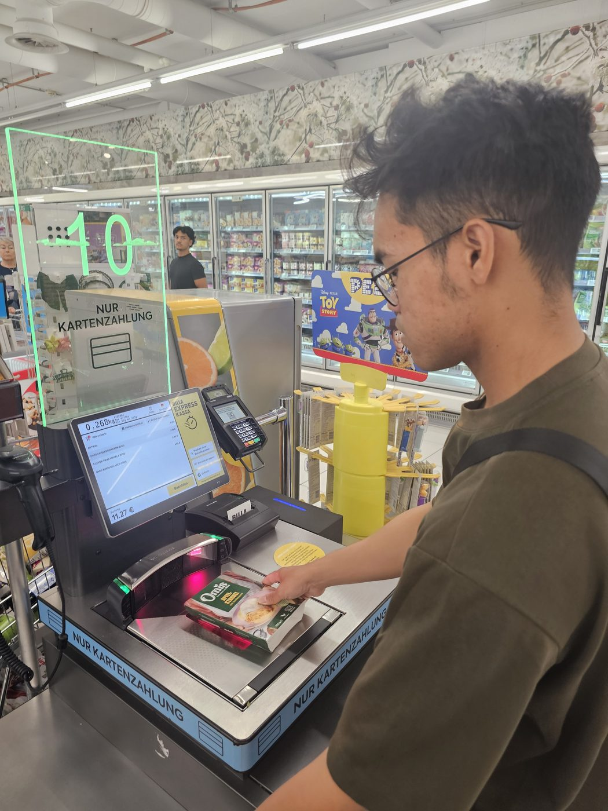
Masakan Austria sungguhan, bukan mi instan
Yang dibeli bukan roti dan selai, tapi makanan siap panas dari rak yang kami lihat kemarin. Empat kotak, dan tiga di antaranya masakan Austria beneran:
Merek Omis — dari Oma, nenek — memang dijual dengan gambar tangan orang tua memegang wajan, dan isinya masakan rumahan Austria. Yang di kemasan gulasnya ada dua label kecil yang menarik: "100% Fleisch aus Österreich" dan "Fair zum Tier". Sementara Clever adalah lini paling murah Billa — setara merek putih supermarket di Indonesia.
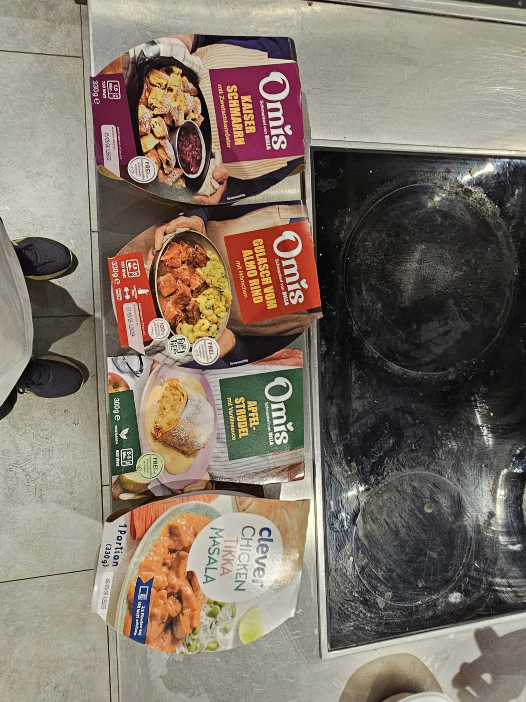
Tempel nama, atau barangnya dibuang
Dapurnya ramai tapi tertib: kompor listrik, microwave, ketel, rak piring dan gelas yang diberi label, dan satu kulkas besar berpintu kaca untuk semua tamu. Sempit dan memanjang, jadi kalau ada dua rombongan masak bersamaan, orang harus bergantian lewat.
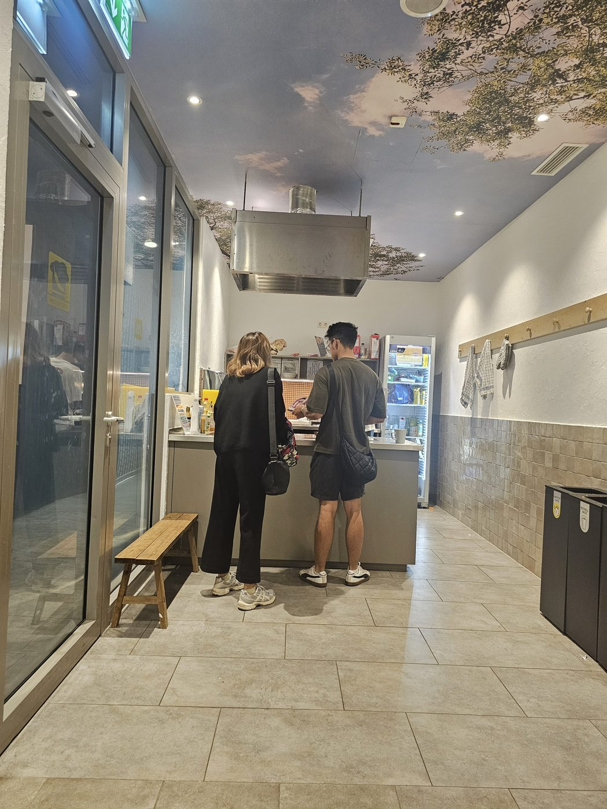
Di pintu kulkasnya tertempel papan yang perlu dibaca serius:
"Label your food." Tolong beri nama makanan dan minuman kalian dengan stiker yang disediakan. Makanan dan minuman yang tidak diberi nama akan dibuang. Di bawahnya ada catatan tambahan: kalau stikernya habis, minta di resepsionis.
Terdengar galak, tapi masuk akal — kulkas ini dipakai puluhan orang dari puluhan kamar. Dan begitu dilihat isinya, aturan itu jelas ditegakkan: hampir semua bungkusan punya stiker bertuliskan nama dan tanggal.
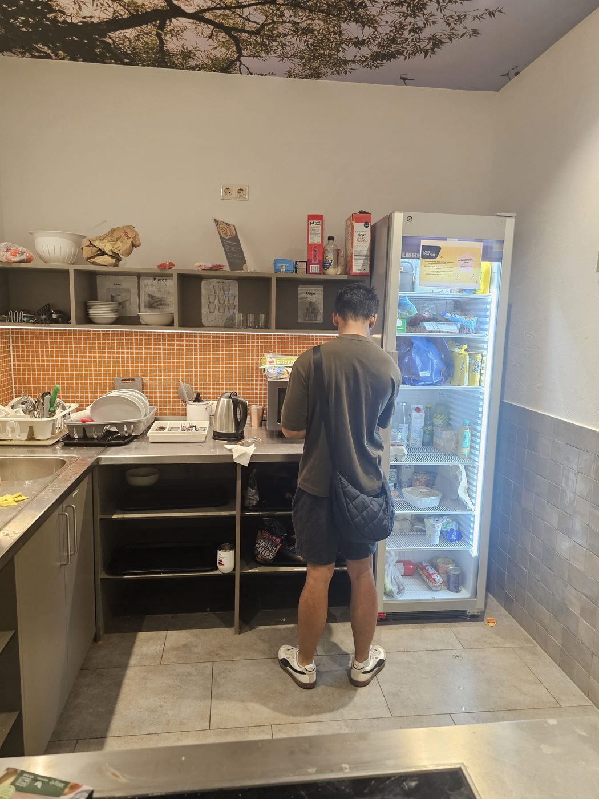
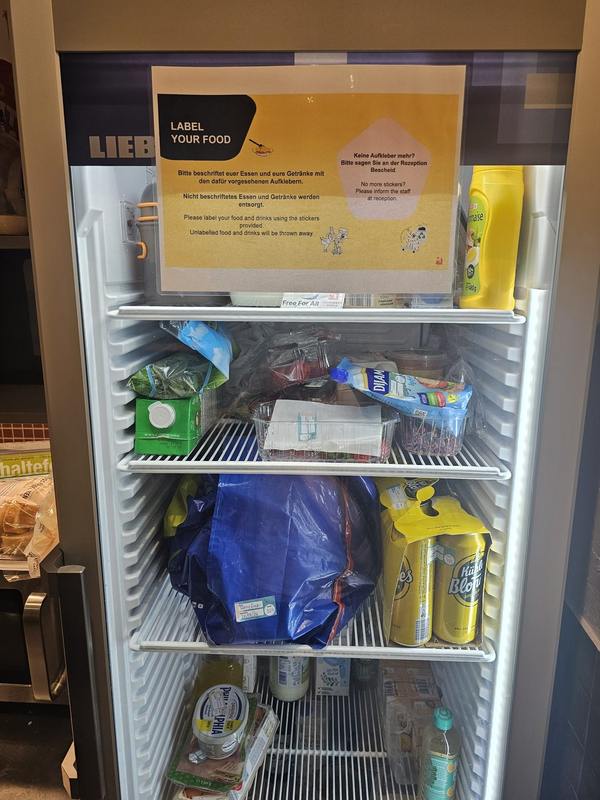
Kanan: lihat stiker-stiker kecil di bungkusan. Yang tanpa nama memang benar-benar dibuang.
Meja bundar, dan seporsi Kaiserschmarrn yang habis duluan
Dimakan di ruang makan bersama sebelah dapur: meja bundar, bangku panjang, dan setangkai bunga plastik di tengahnya. Kotak-kotaknya dibuka, dibagi, dan dimakan langsung dari wadahnya — tidak ada yang keberatan.
Suasananya bukan restoran, dan justru itu yang membuatnya terasa seperti tinggal di sini, bukan sekadar menginap.
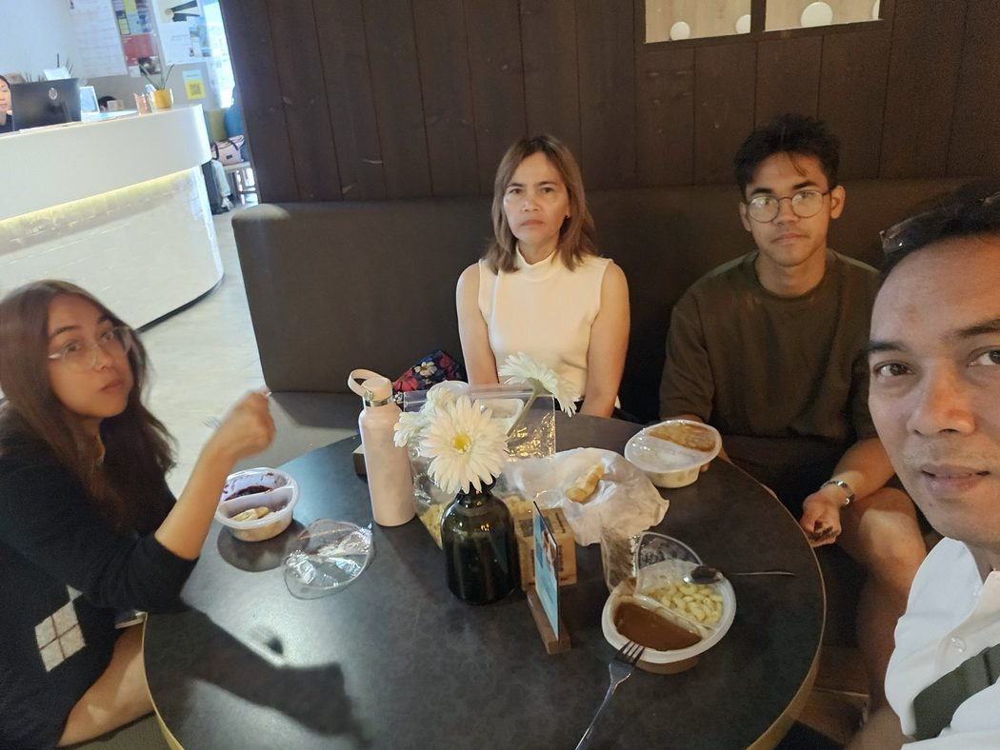
Cuci piring
Selesai makan, piring dicuci. Bukan basa-basi — di dapur bersama, ini bukan pilihan. Bak cucinya satu untuk semua orang, dan tamu berikutnya sudah menunggu giliran memakai kompor.
Aturan tidak tertulisnya sederhana dan berlaku di semua penginapan berdapur bersama di Eropa: tinggalkan dapur seperti waktu kamu datang. Cuci, keringkan, kembalikan ke raknya, lap mejanya. Ada rak pengering di sebelah bak, dan tempat setiap barang sudah ditandai. Butuh lima menit.
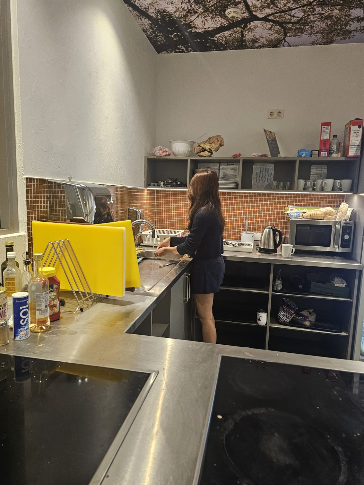
Bus listrik berkabel, dan kenapa kali ini mobilnya ditinggal
Berbeda dari Wina, kali ini mobil ditinggal di penginapan. Alasannya sama seperti yang membuat kami memakai mobil di Wina — hitungannya kebetulan berbalik: pusat kota lama Salzburg sempit, banyak jalannya khusus pejalan kaki, dan parkirnya mahal. Sementara haltenya persis di depan gedung.
Dan ada satu hal yang membuat hitungannya makin telak: tiket transportasinya gratis buat kami — didapat dari penginapan. Jadi seharian ini, berapa kali pun naik-turun bus, biayanya nol. Kalau menginap di Salzburg, ini pertanyaan pertama yang layak diajukan di resepsionis sebelum membeli tiket sendiri.
Yang datang bukan bus biasa: Obus — bus listrik yang menempel pada kabel di atas jalan, persis seperti trem tapi beroda karet. Salzburg punya jaringan Obus yang termasuk paling besar di Eropa, dan efeknya langsung terasa: jalanan kota ini sepi dari suara mesin diesel. Bus datang, berhenti, jalan lagi, nyaris tanpa bunyi.
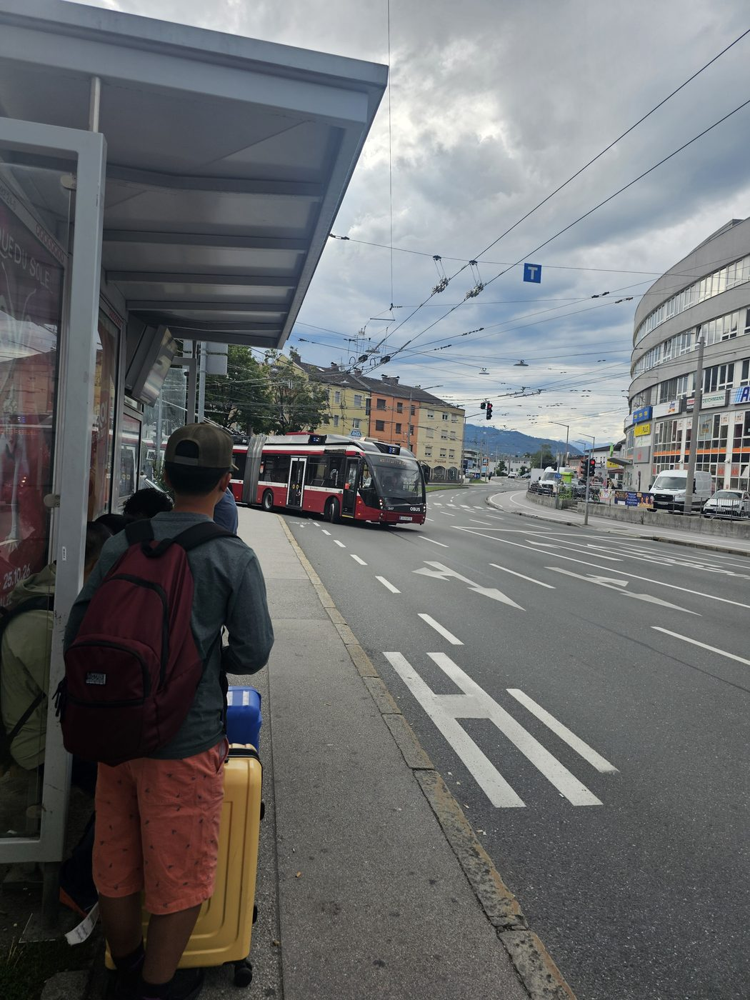
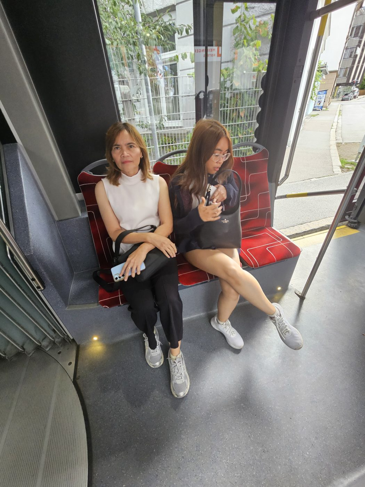
Kiri: perhatikan jaring kabel di atas jalan — itu yang menggerakkan busnya. Kanan: interiornya lapang, dan jam segini masih banyak kursi kosong.
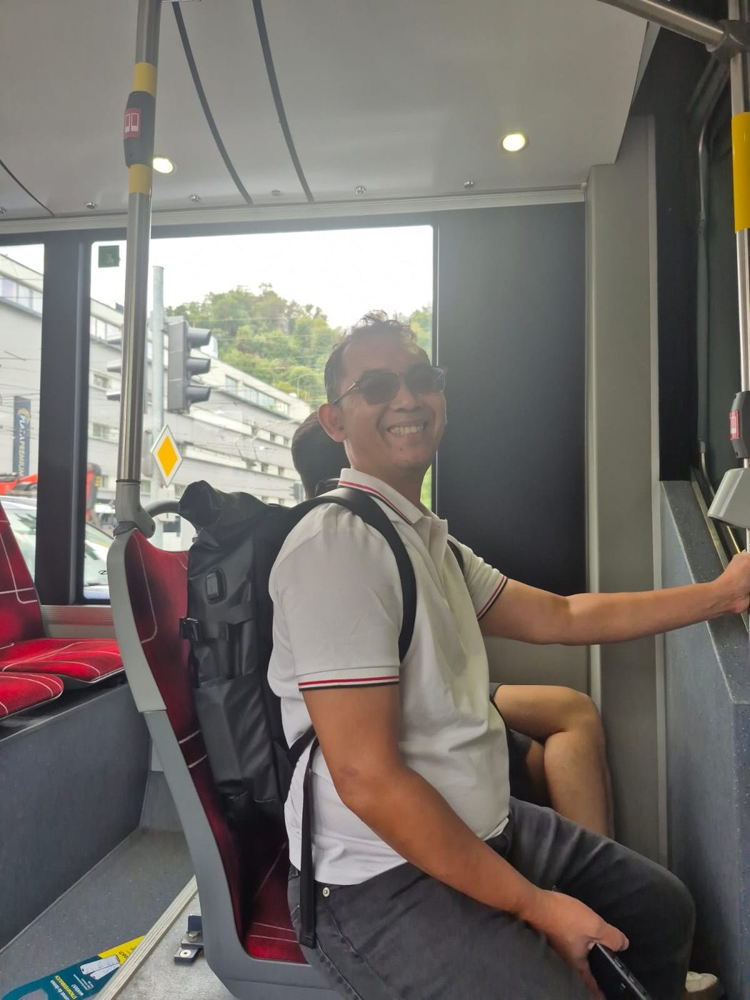
Gereja bermenara dua, lalu taman
Turun dari bus, pemandangan pertama sudah khas Salzburg: sebuah gereja putih bermenara dua berdiri di ujung deretan mobil parkir, dengan jam di kedua menaranya dan spanduk merah tergantung di fasadnya. Ada bangku panjang di trotoar seberangnya, dan langitnya akhirnya biru setelah seharian kemarin kelabu.
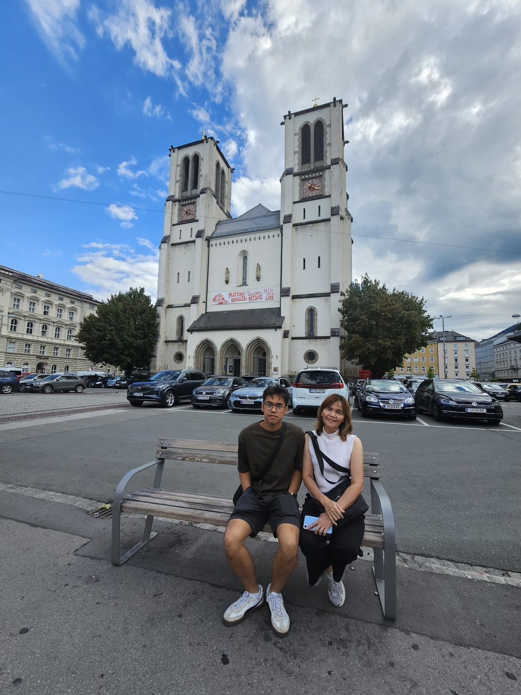
Gratis, dan salah satu taman barok paling terkenal di dunia
Perhentian pertama hari ini dipilih dengan sengaja: lokasi syuting The Sound of Music. Dan di Salzburg, itu berarti satu tempat lebih dulu dari yang lain.
Beberapa menit jalan kaki, dan sampailah di Mirabellgarten — taman istana yang jadi salah satu tempat paling difoto di Salzburg, dan bebas masuk. Istananya, Schloss Mirabell, dibangun pada awal abad ke-17 oleh seorang uskup-pangeran untuk perempuan yang dicintainya; tamannya ditata ulang bergaya barok beberapa dekade kemudian, dan susunan itulah yang masih terlihat sampai sekarang: petak bunga simetris, semak yang dipangkas jadi kerucut, patung, dan air mancur.
Dan soal "bebas masuk" itu bukan kebetulan. Menempel di tembok rendah di tepi taman ada lempeng batu merah berhuruf emas, dan isinya persis menjelaskan kenapa. Angka tahunnya, dalam angka Romawi di kedua ujung: MDCCCLXVI — 1866.
Tulisannya, diterjemahkan: Untuk kenangan penuh syukur atas penyerahan cuma-cuma Taman Mirabell beserta benteng dan tanah antara bekas Gerbang Mirabell dan Gerbang Linz kepada Kotamadya Salzburg — yang dengan murah hati dianugerahkan oleh Yang Mulia Kaisar dan Raja Kaisar Franz Josef I, pada peringatan lima puluh tahun bersatunya kembali Kadipaten Salzburg dengan Mahkota Austria.
Jadi begini urutannya. Salzburg berabad-abad bukan bagian Austria — dia negara sendiri, diperintah uskup-agung. Baru pada 1816, setelah era Napoleon berakhir, wilayah ini resmi masuk Austria. Lima puluh tahun kemudian, pada 1866, kaisarnya memberikan taman ini kepada kota — cuma-cuma.
Itu sebabnya, seratus enam puluh tahun kemudian, kami bisa masuk tanpa membeli tiket. Bukan kebijakan pariwisata modern, tapi hadiah dari seorang kaisar yang sudah lama meninggal.
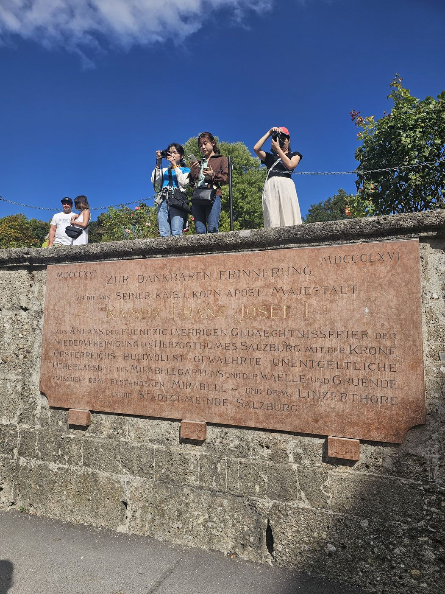
Petak bunganya pagi itu sedang penuh: merah, kuning, dan oranye dalam pola geometris rapi, dengan fasad istana krem sebagai latar.
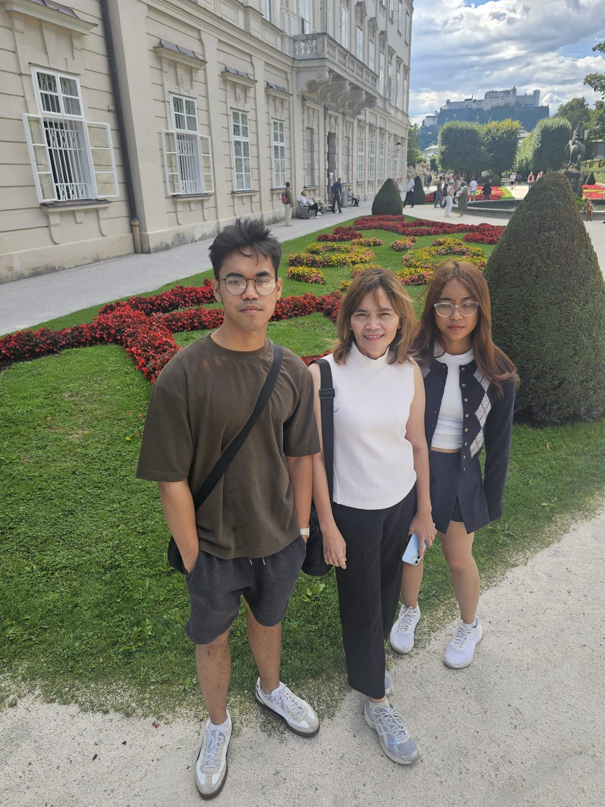
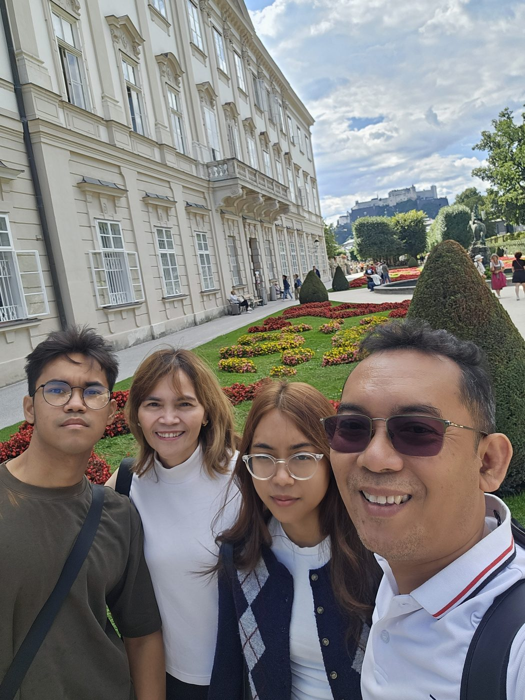
Petak bunga barok memang dirancang untuk dilihat dari atas — tapi dari bawah pun pola warnanya tetap terbaca.
Buat yang tumbuh dengan film The Sound of Music, taman ini akan terasa familiar tanpa perlu dijelaskan: adegan Do-Re-Mi sebagian diambil di sini, termasuk di sekitar air mancur Pegasus — patung kuda bersayap dari abad ke-17 yang berdiri di kolam bundar di tepi taman.
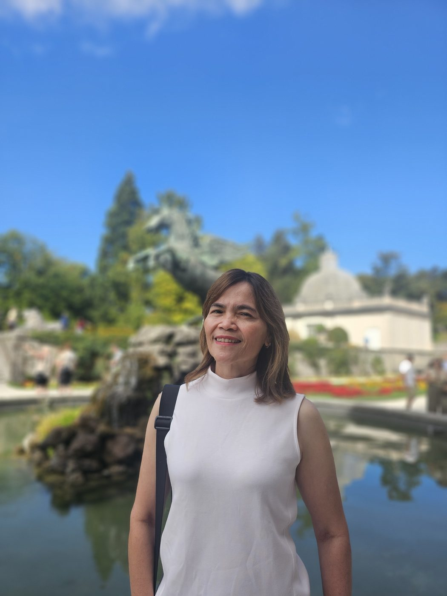
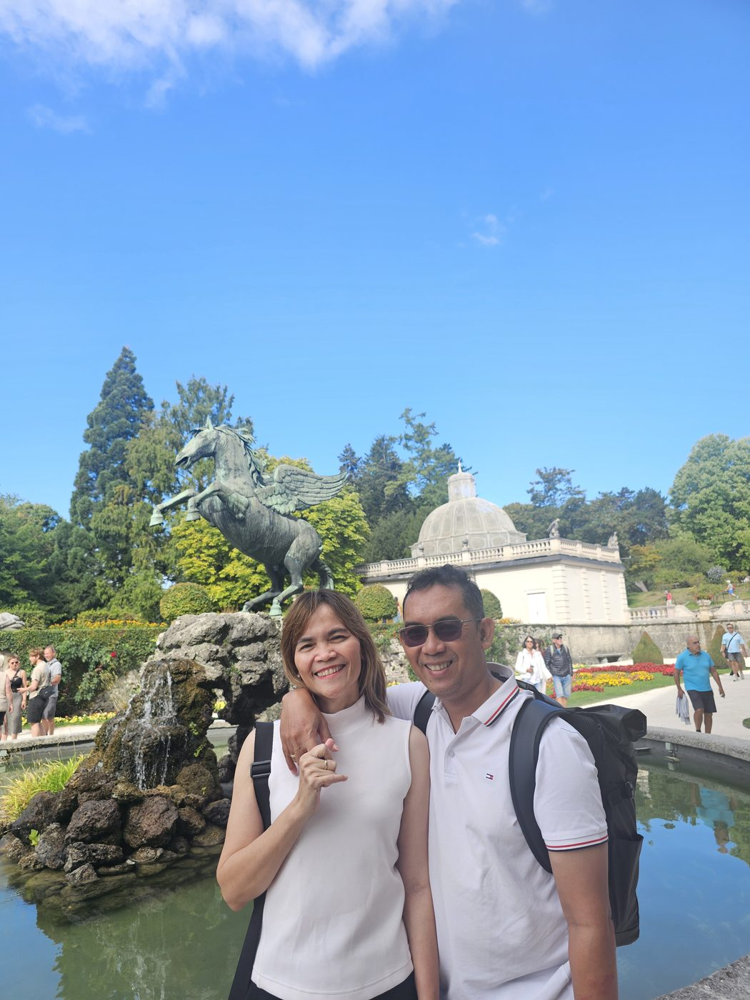
Kanan: Pegasus, kuda bersayap dari perunggu. Salah satu titik foto paling ramai di Salzburg — dan jam sepuluh pagi masih bisa dapat giliran.
Di sudut lain taman ada sesuatu yang jauh lebih tua dari air mancurnya: sebatang pohon raksasa dengan cabang-cabang setebal badan orang yang tumbuh mendatar sampai menyentuh tanah, lalu naik lagi. Tidak ada papan penjelasnya, tidak ada antrean fotonya. Tapi untuk memanjat dan duduk di cabangnya, dia jauh lebih menyenangkan daripada patung mana pun.
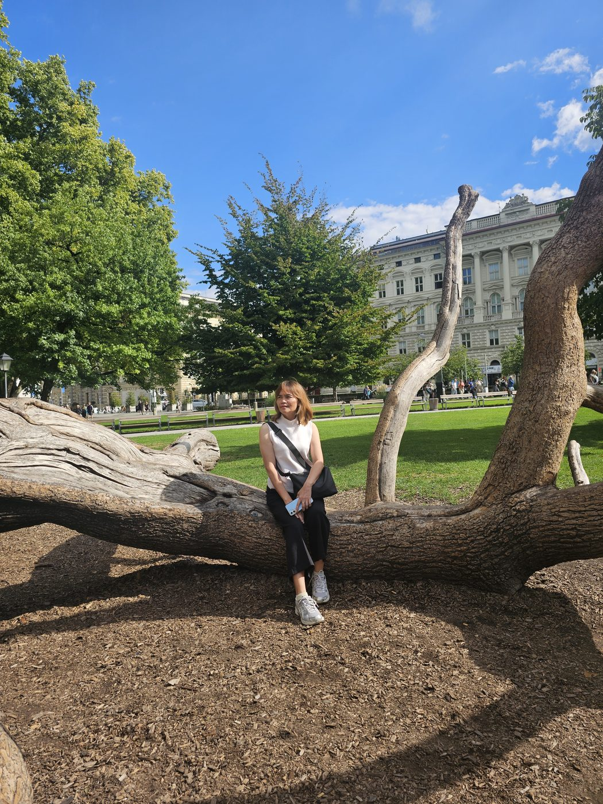
Bagian taman yang tidak pernah masuk foto orang
Di sisi lain taman ada kebun mawar berpetak bundar: merah tua, merah muda, putih krem, dikelilingi kotak pagar tanaman rendah dan kerikil putih. Di ujungnya berdiri deretan pot batu di atas pilar, dan di kejauhan — di atas bukit — benteng Hohensalzburg, benteng besar yang menguasai seluruh siluet kota ini.
Tapi yang membuat kami berhenti bukan mawarnya. Di tengah petak itu ada seorang tukang kebun bertopi jerami, bercelana pendek hijau, berlutut di antara semak sambil memangkas satu per satu dan menjatuhkan potongannya ke ember seng. Di belakangnya rombongan turis lewat tanpa menoleh.
Taman sebersih ini tidak terjadi sendiri. Setiap petak simetris, setiap semak berbentuk kerucut, dan setiap petak bunga yang warnanya tidak pernah bolong itu ada yang mengerjakannya — tiap hari, sebelum dan selama orang-orang berfoto di sekitarnya.
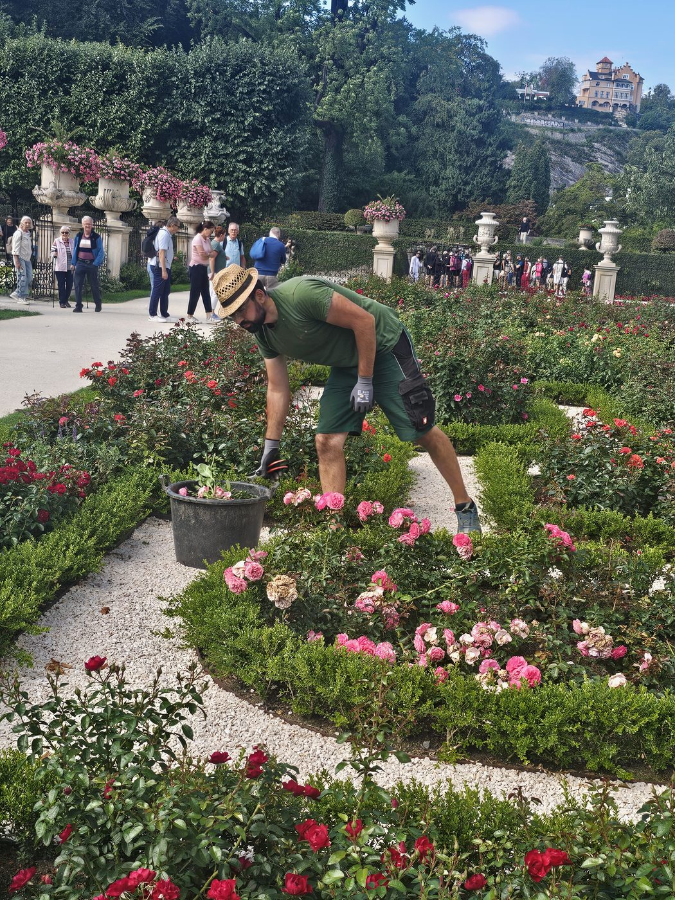
Di sisi utara berdiri Orangerie Salzburg — rumah kaca istana, tempat pohon jeruk dan tanaman yang tidak tahan dingin dulu diungsikan setiap musim dingin. Namanya tertulis besar-besar di dindingnya, dan di depannya petak bunga impatiens berwarna ungu, merah muda, merah, dan putih yang ditanam serapat karpet.
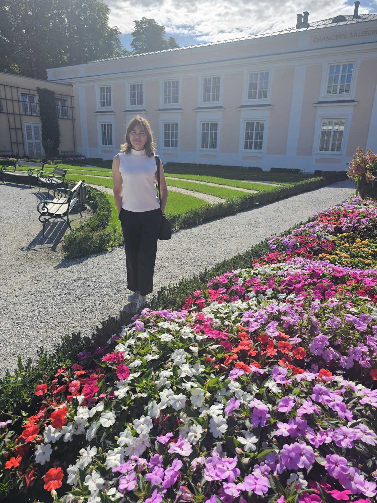
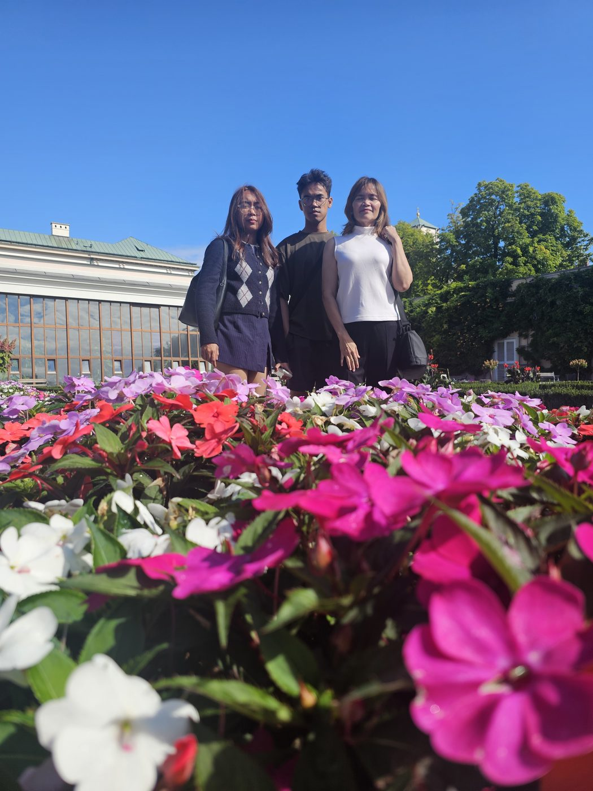
Bunga-bunga ini ditanam ulang tiap musim. Yang sedang mekar pagi ini adalah edisi akhir musim panas.
Dirancang untuk dilihat dari jendela lantai atas
Dari jalur tengah, susunannya baru terbaca utuh: petak rumput dipotong jadi bentuk-bentuk melengkung, diisi begonia merah rapat sampai membentuk pola besar, dengan istana krem beratap hijau sebagai penutup pandangan. Taman barok memang dirancang begitu — polanya dibuat untuk dilihat dari atas, dari jendela lantai atas istana, bukan dari mata orang yang berjalan di dalamnya.
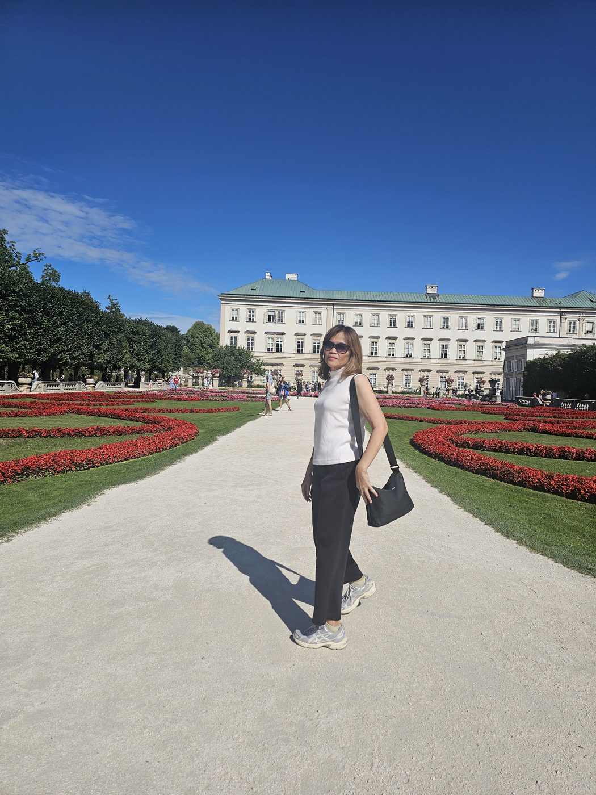
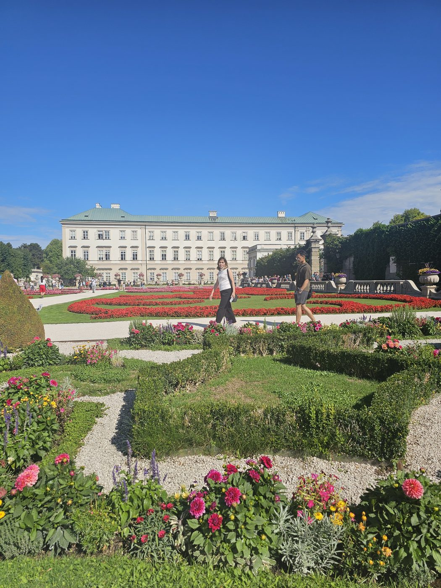
Kiri: jalur tengah, dan polanya yang melengkung simetris. Kanan: dahlia di petak tepi, jenis bunga yang mekar paling akhir sebelum musim gugur.
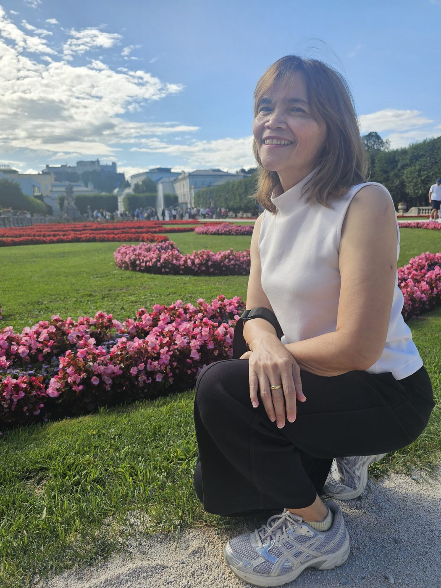
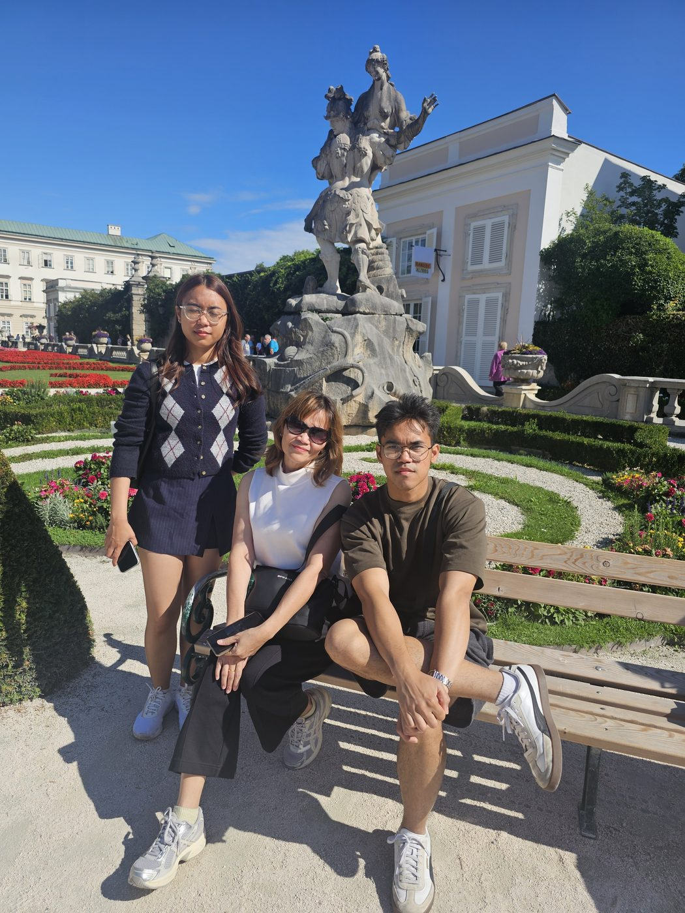
Bangku-bangku di taman ini menghadap ke arah yang benar, dan gratis. Duduk selama apa pun tidak ada yang menegur.
Dan sebuah puisi yang dipahat di dinding sebelahnya
Di sudut taman yang lebih sepi ada sesuatu yang gampang terlewat: teater yang seluruh dindingnya terbuat dari tanaman. Panggungnya batu, kursinya bangku kayu berjajar di atas kerikil, dan yang berfungsi sebagai sayap panggung serta latar belakang adalah pagar tanaman yang dipangkas setinggi dinding. Namanya Heckentheater — teater pagar. Dibuat pada awal abad ke-18, dan termasuk yang tertua di utara Pegunungan Alpen.
Tidak ada pertunjukan pagi itu. Yang ada cuma bangku kosong, bayangan panjang, dan suara burung.
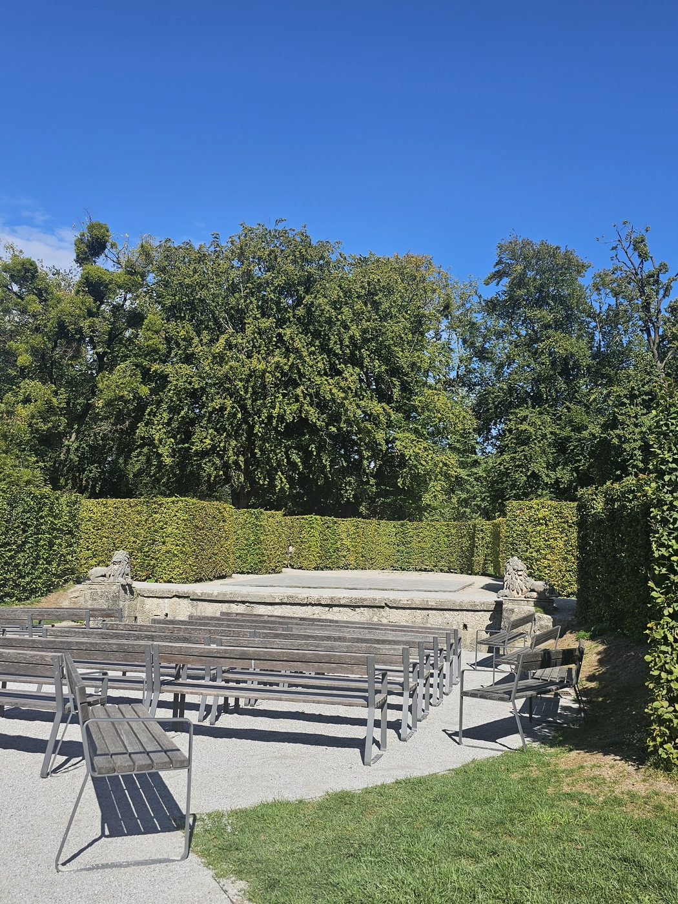
Di dinding berlumut di sebelahnya, tertanam lempeng batu berisi sebuah puisi — dipahat, bukan dicetak. Judulnya "Naturtheater", dan di bawahnya nama penulisnya: Georg Trakl, 1887–1914, penyair ekspresionis yang lahir di kota ini dan mati muda di usia dua puluh tujuh.
Baitnya yang kedua persis menggambarkan tempat kami berdiri:
Aku berdiri di depan panggung hijau! Mulailah, mulailah lagi, wahai lakon hari-hari yang hilang — tanpa dosa, tanpa penebusan; seperti hantu saja, asing dan dingin.
Ditulis oleh anak kota ini tentang teater pagar ini, lalu dipahat di batu dan ditanam di dinding di sebelahnya. Berdiri membacanya pagi itu, di taman yang penuh orang berfoto beberapa puluh meter dari situ, rasanya seperti menemukan ruangan lain di dalam rumah yang sama.
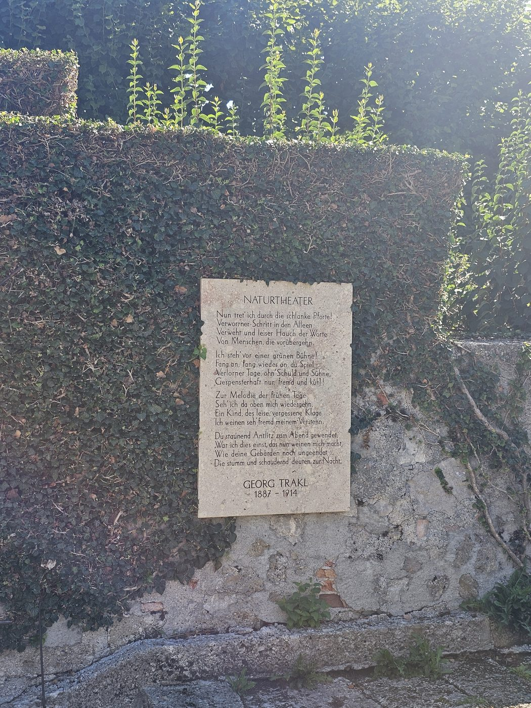
Yang tertua di Eropa, dan yang paling menyenangkan di taman ini
Naik tangga di ujung taman, dan suasananya berubah total. Berjajar di sepanjang jalur, di atas alas batu masing-masing, berdiri patung-patung kurcaci dari batu — bertopi lebar, berhidung besar, berwajah keriput, sebagian tersenyum, sebagian cemberut, semuanya seukuran anak kecil dan semuanya digambar dengan detail yang sangat serius.
Ini Zwergerlgarten, kebun kurcaci. Dipahat pada awal abad ke-18 atas perintah seorang uskup-agung Salzburg, dari batu marmer Untersberg — gunung yang sama yang menyediakan batu untuk bangunan-bangunan besar kota ini. Yang digambarkan bukan tokoh dongeng, tapi orang-orang kerdil yang dulu benar-benar hidup di lingkungan istana, dipahat satu per satu dengan wajah dan pakaian yang berbeda-beda.
Kebun ini disebut sebagai kebun kurcaci tertua di Eropa. Pada abad ke-19 patung-patungnya sempat disingkirkan dan dijual, dan baru sebagian dikumpulkan kembali kemudian — jadi yang berdiri sekarang adalah sisa yang berhasil pulang.
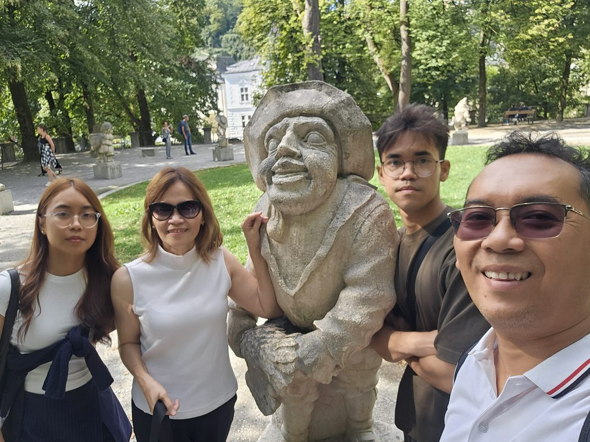
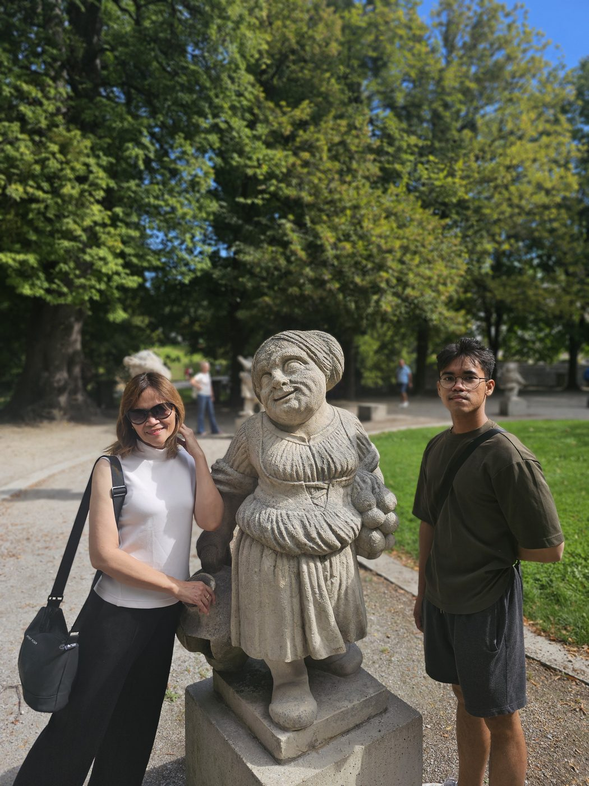
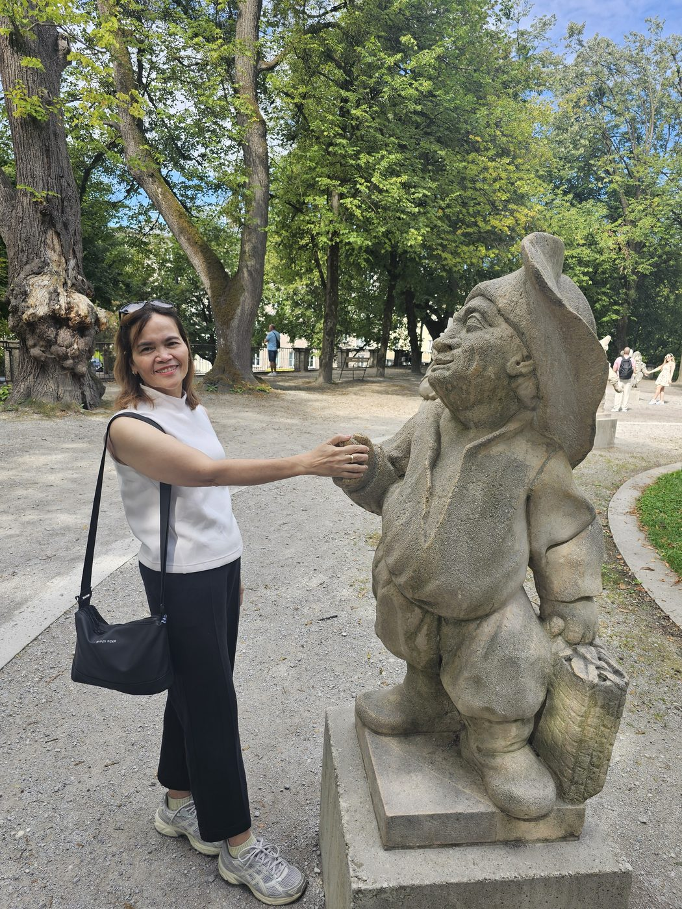
Tiap patung punya wajah, pakaian, dan barang bawaan sendiri — tidak ada dua yang sama.
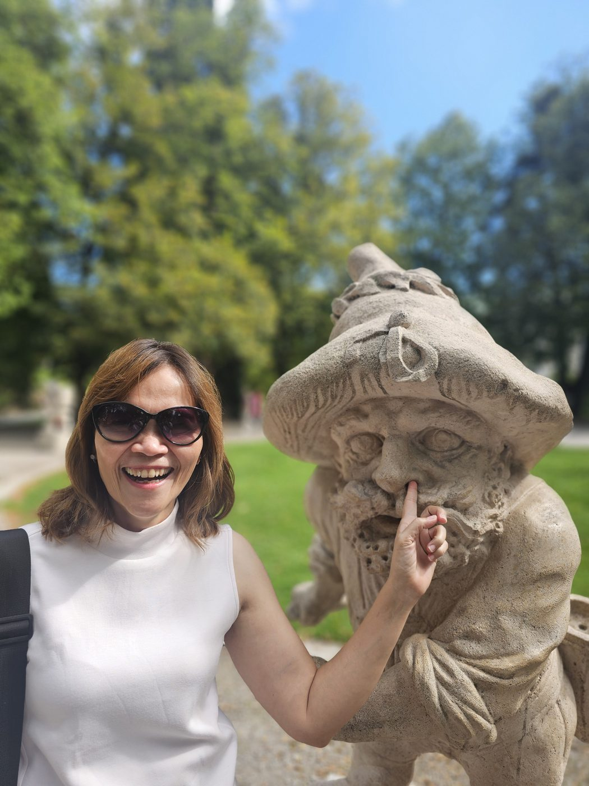
Buat penggemar The Sound of Music: kurcaci-kurcaci ini ikut muncul di adegan Do-Re-Mi — anak-anak berlari melewatinya. Jadi tanpa sengaja, satu tempat ini menyelesaikan dua daftar sekaligus.
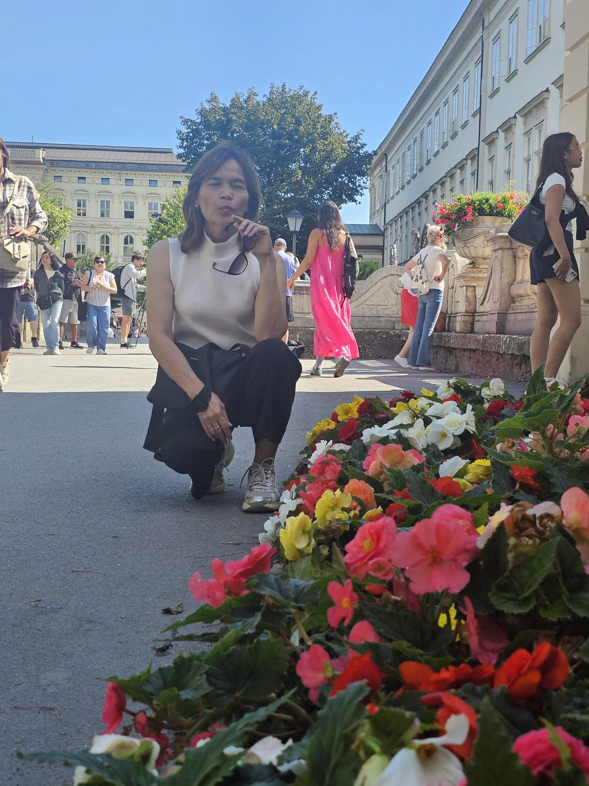
Juga gratis, dan hampir semua orang melewatkannya
Yang tidak kami duga: istananya sendiri boleh dimasuki. Bukan sebagai museum berbayar — Schloss Mirabell sekarang dipakai sebagai kantor pemerintah kota Salzburg, dan bagian tangga serta aulanya terbuka untuk umum kalau sedang tidak dipakai acara.
Di dalamnya: langit-langit berkubah dengan plesteran stuko putih berbentuk daun dan kerang, pilar-pilar besar, lampu gantung besi, lantai batu berpola, dan pintu kayu tua yang besar sekali. Sunyi, sejuk, dan — untuk tempat sepenting ini — mengejutkan karena tidak ada yang menjaga pintu masuknya.
Aula marmer di gedung ini termasuk salah satu ruang pernikahan paling terkenal di Eropa, dan konser diadakan di sana hampir setiap malam. Tapi di jam sebelas pagi, isinya cuma beberapa orang yang kebetulan penasaran seperti kami.
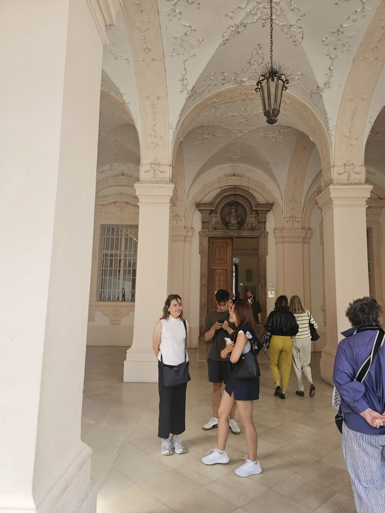
Dan sebuah spanduk yang menjelaskan kenapa mobil kami ditinggal
Dari Mirabell, jalan kaki menyeberangi Sungai Salzach — sungai hijau kehijauan yang membelah Salzburg jadi dua: sisi baru tempat Mirabell berdiri, dan kota lama di seberang, yang menempel di kaki tebing dengan benteng di atasnya.
Di pagar jembatan tergantung spanduk-spanduk kota. Satu untuk festival musik, satu lagi berbunyi: "weniger stau. mehr stadt." — lebih sedikit macet, lebih banyak kota. Kampanye pemerintah kotanya sendiri, untuk mengurangi mobil di pusat kota.
Membacanya sambil berjalan kaki, setelah pagi tadi memutuskan meninggalkan mobil di penginapan, rasanya seperti mendapat tepukan di bahu.
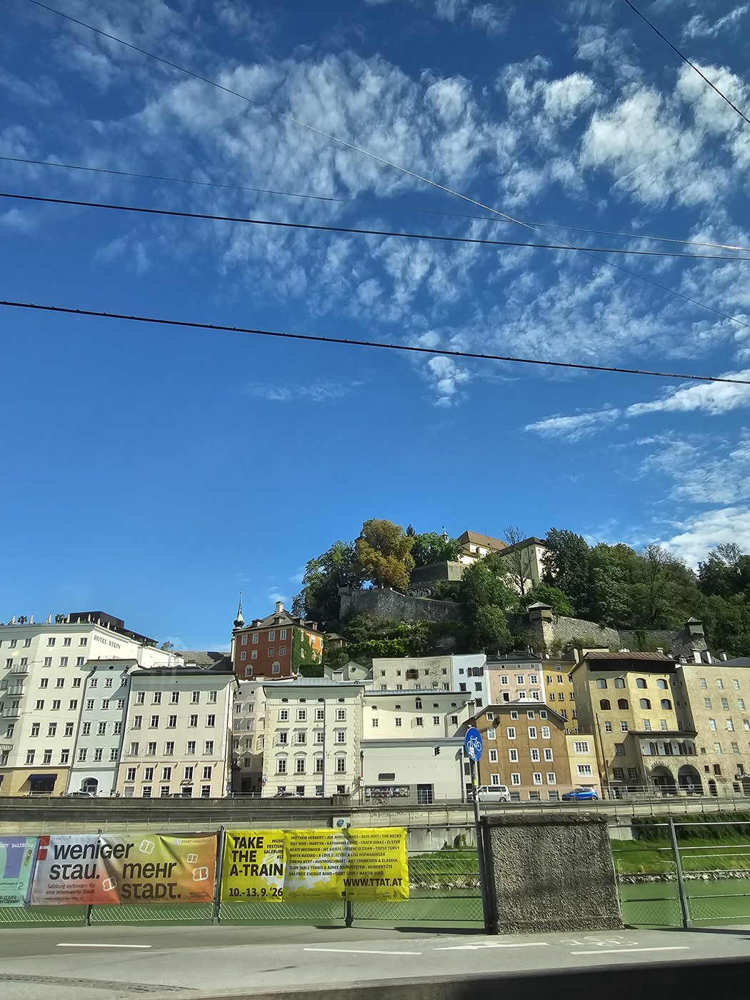
Kedai kopi tua, dan stasiun cuaca yang bertugas sejak 1888
Alun-alun pertama yang ditemui di kota lama adalah Alter Markt — pasar lama. Di satu sisinya berdiri Café Tomaselli, salah satu kedai kopi tertua di Austria; kopi sudah disajikan di lokasi ini sejak awal abad ke-18. Terasnya penuh payung bergaris hijau-putih, dan hampir semua meja terisi jam segini.
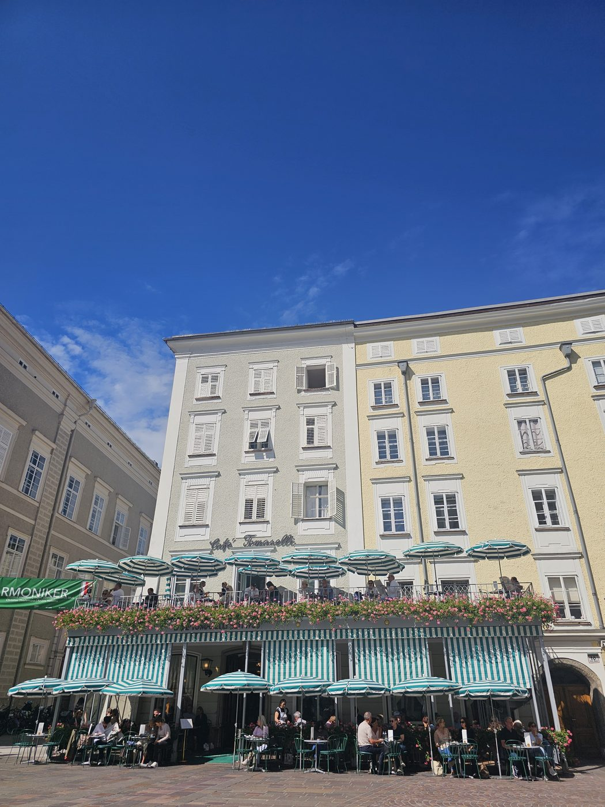
Tapi yang bikin berhenti lama justru benda hitam-emas setinggi orang di tengah alun-alun: sebuah stasiun cuaca. Bukan replika — alat sungguhan, lengkap dengan termometer dan barometer di balik kaca, dikelilingi ukiran berlapis emas dan patung kecil di puncaknya.
Papan kuning di dalamnya menjelaskan: dipasang oleh Stadtverein Salzburg, perkumpulan kota yang didirikan 1862, dan menjalankan stasiun cuaca ini untuk warga kota sejak 1888. Jadi benda ini sudah melaporkan cuaca Salzburg selama hampir seratus empat puluh tahun — melewati dua perang dunia, dan masih menunjuk angka pagi ini.
Di alasnya ada lempeng logam kecil dengan angka 424,250 — ketinggian titik ini di atas permukaan laut, dalam meter, sampai tiga angka di belakang koma. Ketelitian yang sangat Austria.
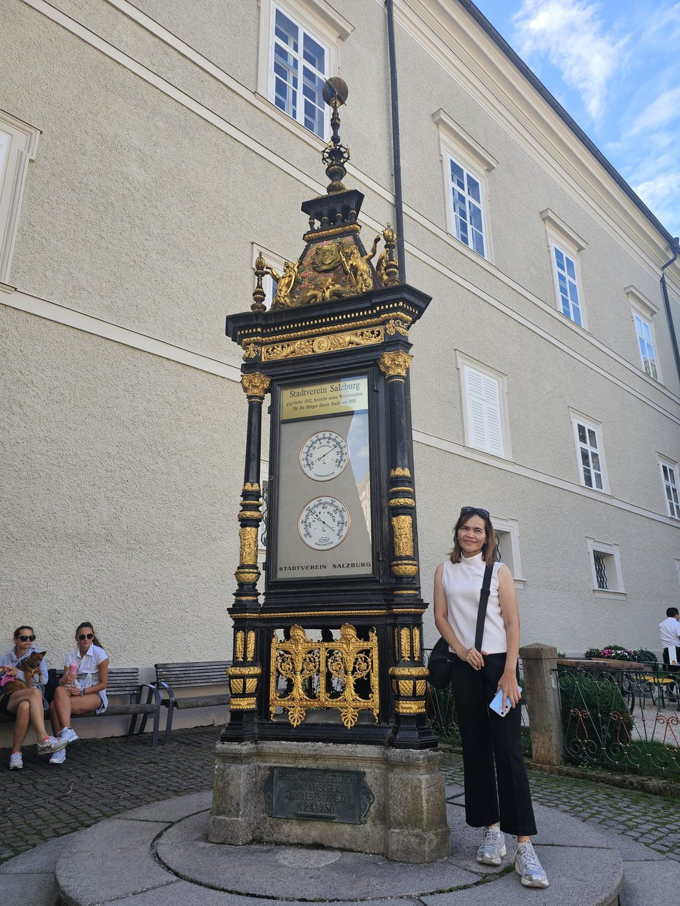
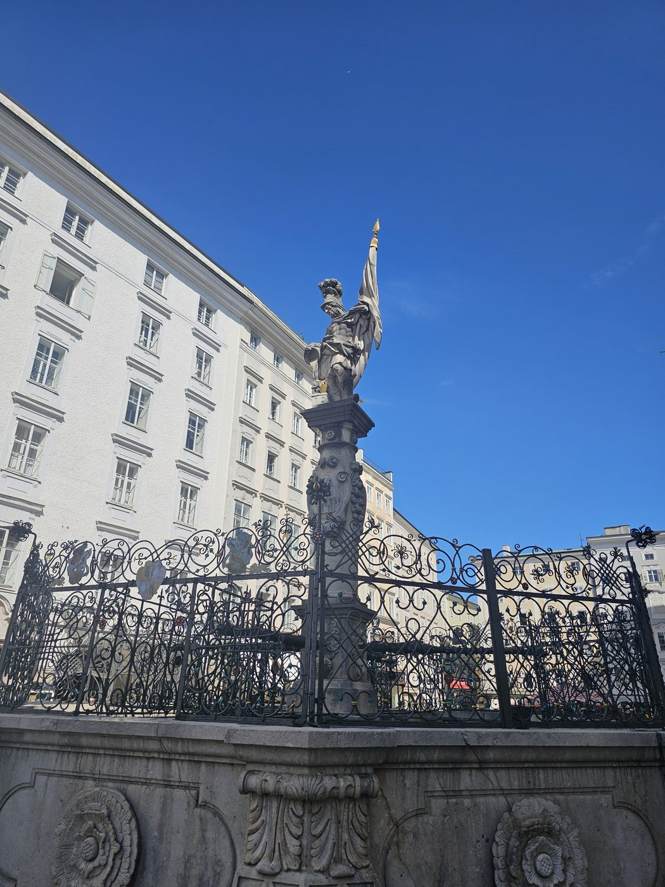
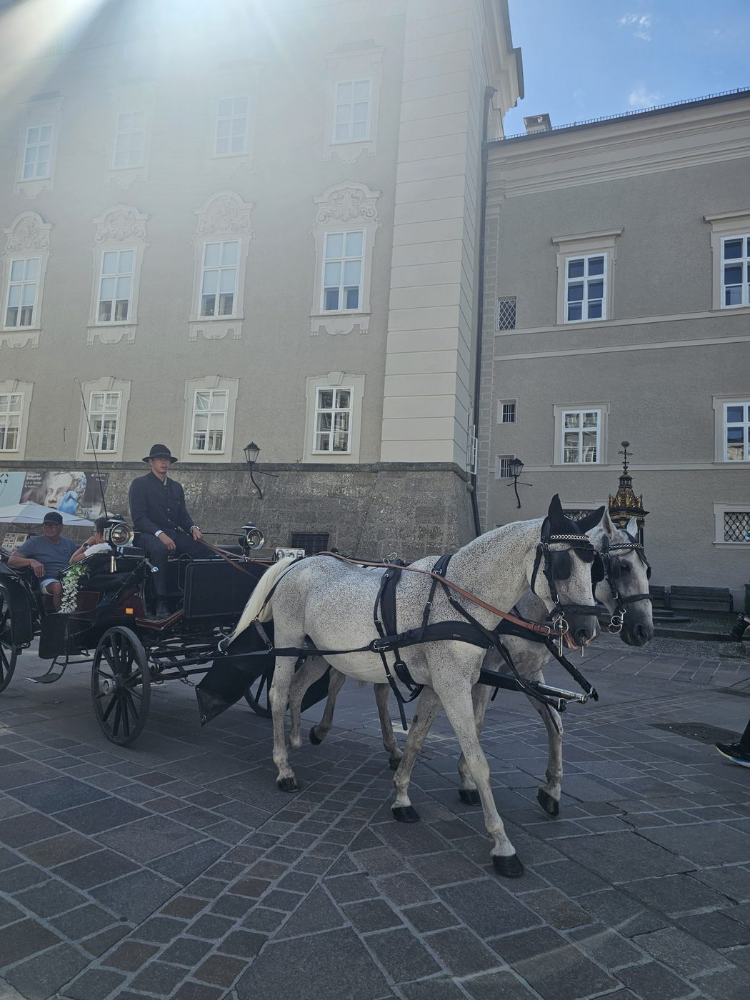
Kiri: pagar besi tempa dan patung malaikat bersayap — detail yang di kota ini dianggap biasa saja. Kanan: Fiaker, kereta kuda yang masih beroperasi di alun-alun, sama seperti di Wina.
Katedral, dan panggung yang sedang berdiri di depannya
Beberapa gang lagi, dan ruang terbuka besar terbuka mendadak: Domplatz, dengan Katedral Salzburg berdiri di ujungnya. Fasadnya batu terang, dua menara kembar berkubah hijau, kubah besar di tengah, dan deretan patung di lengkung pintunya. Di sisinya tergantung spanduk DomQuartier — museum yang menghubungkan katedral dengan bekas kediaman uskup-agung lewat lorong di lantai atas.
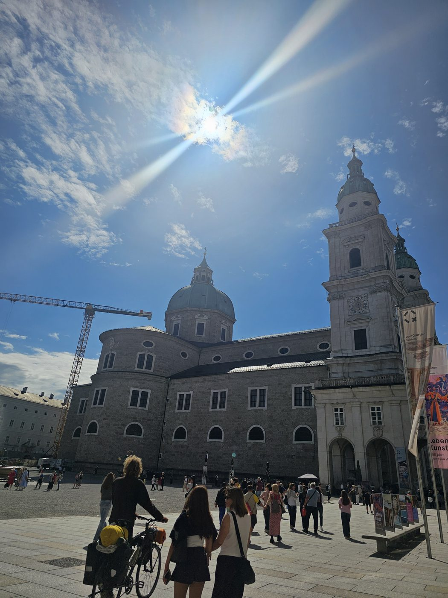
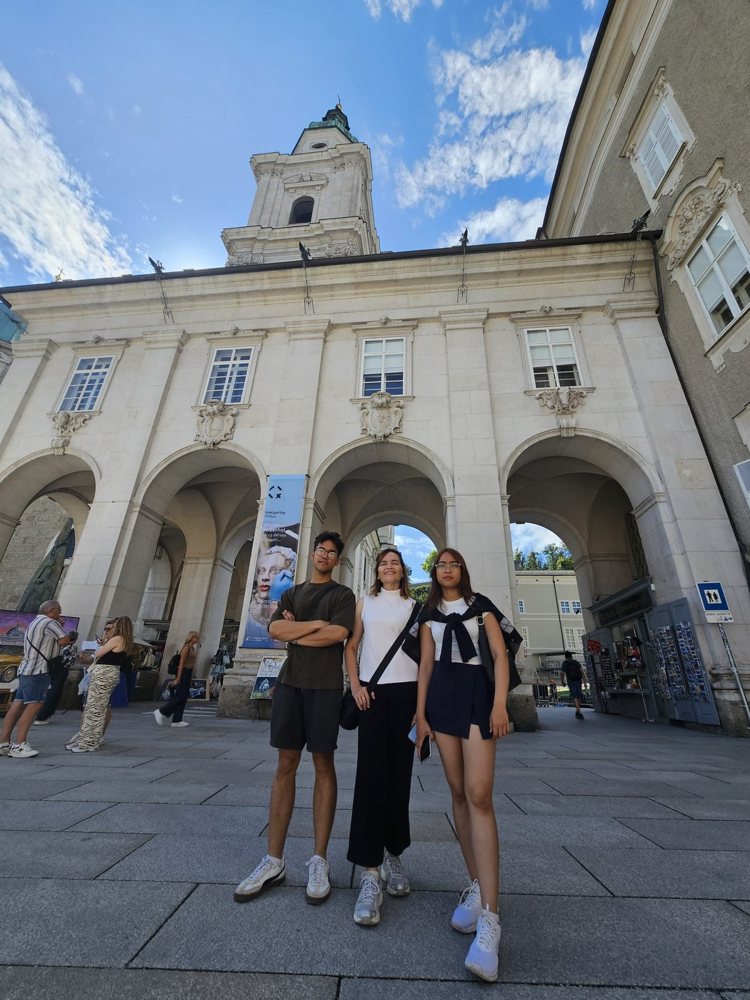
Deretan lengkung di pintu masuknya jauh lebih besar dari yang terlihat di foto — patung-patung itu tingginya lebih dari dua kali orang dewasa.
Yang tidak diduga: sebagian alun-alunnya sedang dipasangi panggung. Rangka besi, menara lampu, pembatas, dan terpal hijau berdiri persis di depan katedral. Ini Salzburger Festspiele — festival musik dan teater yang tiap musim panas mengambil alih kota lama, dan yang panggung terkenalnya memang didirikan di Domplatz, dengan fasad katedral sebagai latar belakang.
Jadi selama beberapa minggu setiap tahun, alun-alun tertua kota ini berubah jadi ruang pertunjukan terbuka. Kami datang saat perangkatnya masih berdiri — kurang bagus untuk foto, tapi jauh lebih jujur soal bagaimana kota ini benar-benar dipakai.
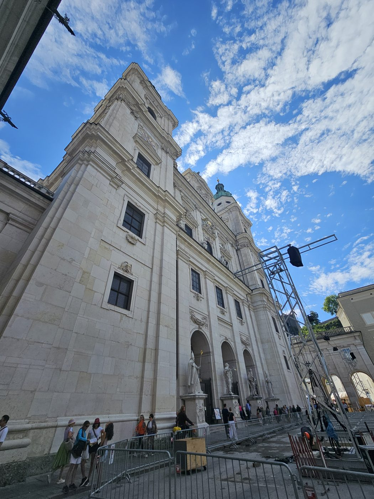
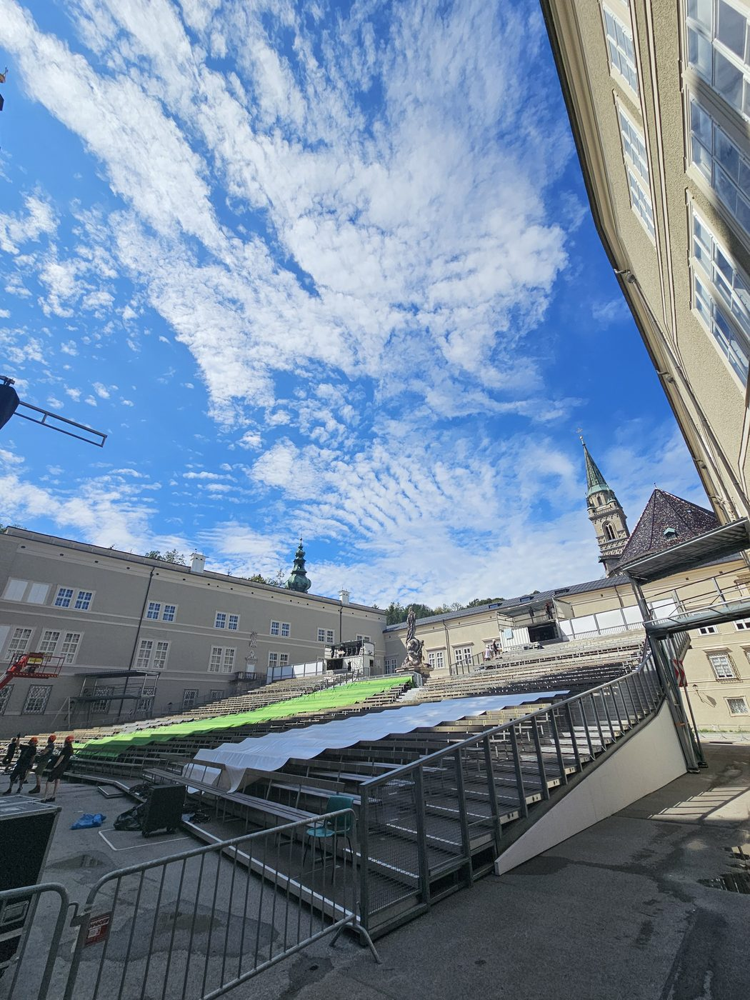
Rangka besi dan terpal hijau di depan katedral. Bukan renovasi — ini panggung festival.
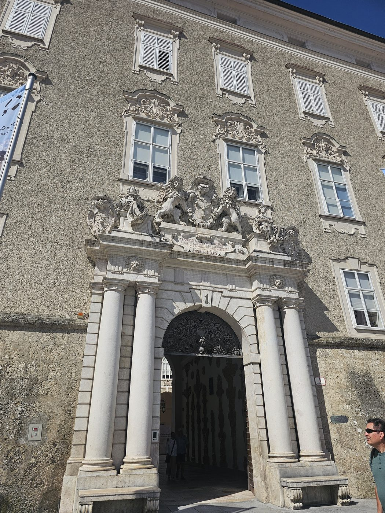
Karya seni kontemporer di alun-alun berumur berabad-abad
Di alun-alun berikutnya, Kapitelplatz, berdiri sesuatu yang jelas-jelas bukan barok: bola emas raksasa dengan patung seorang laki-laki berdiri tegak di atasnya. Judulnya Sphaera, karya pematung Jerman Stephan Balkenhol, dipasang sebagai bagian dari program seni kontemporer kota.
Dan efeknya justru bagus: bola emas mengilap itu berdiri di halaman batu, dengan benteng Hohensalzburg menjulang di tebing tepat di belakangnya. Yang paling baru dan yang paling tua, dalam satu pandangan.
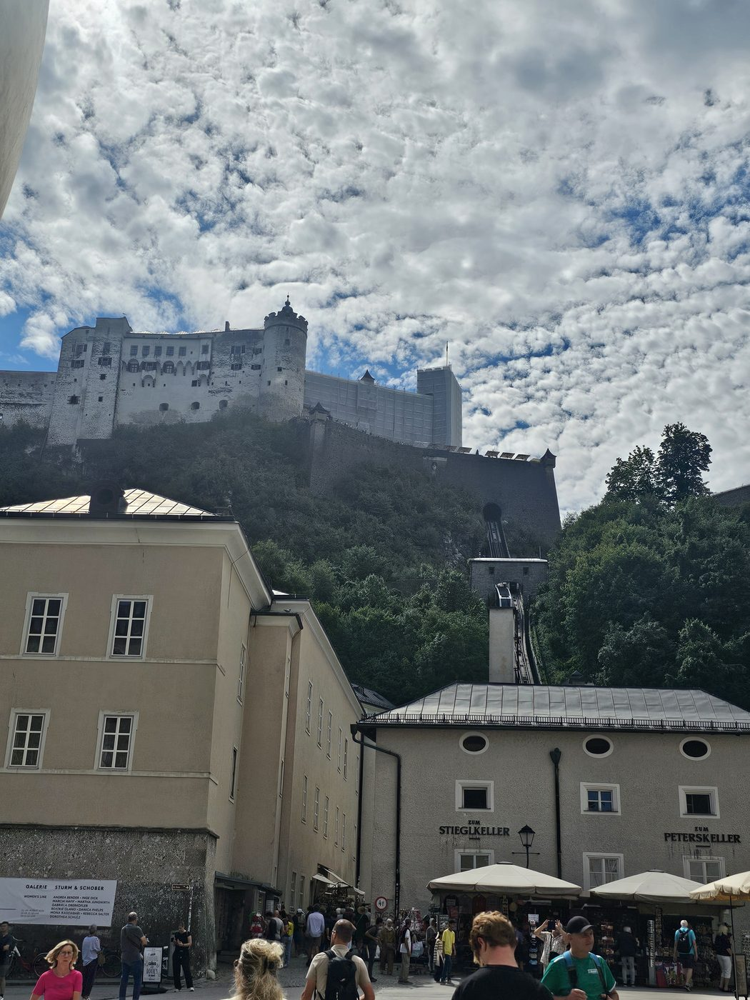
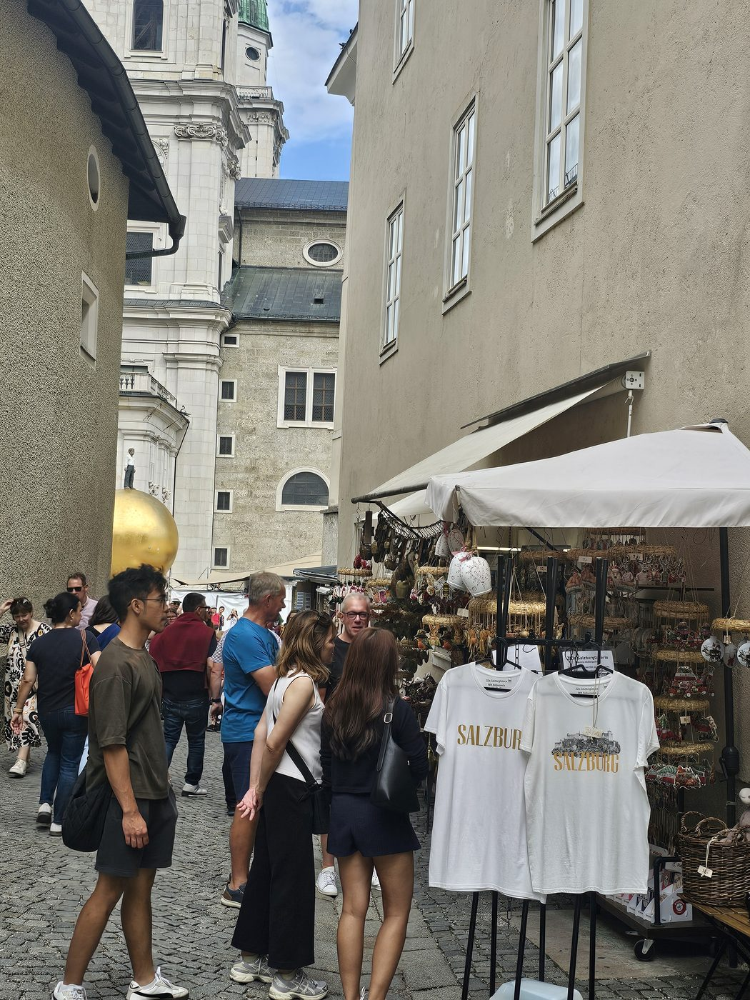
Kiri: benteng di atas tebing, dan papan dua rumah bir tua di bawahnya. Kanan: lapak kaos, dan bola emas Sphaera mengintip di belakangnya.
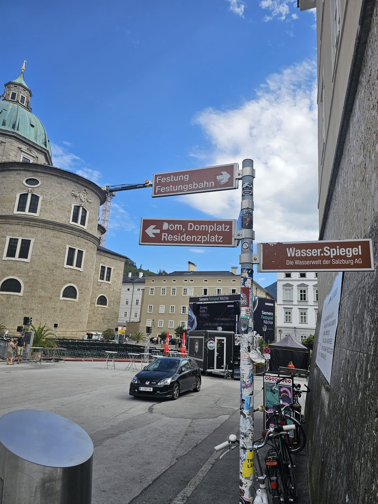
Papan yang isinya harga, dan satu saran praktis
Hohensalzburg berdiri di tebing di atas kota lama dan termasuk benteng abad pertengahan terbesar di Eropa yang masih utuh. Untuk naik ke sana ada dua cara: jalan kaki menanjak, atau naik Festungsbahn — funikular yang sudah menarik orang ke atas sejak akhir abad ke-19.
Di bawah stasiunnya berdiri papan harga, dan isinya jelas:
Bagian paling berguna dari papan itu adalah judulnya sendiri: ONLINE TICKET — SKIP THE LINE. Antrean loket di sini bisa panjang sekali di jam ramai, dan tiketnya bisa dibeli lewat kode QR di papan yang sama. Kalau tidak mau antre, beli online saja — bahkan kalau kamu sudah berdiri di depan loketnya.
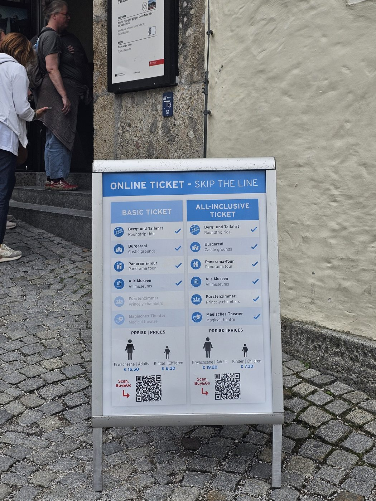
Bagian paling saya suka dari seluruh kota lama
Di dinding putih sebuah rumah, di antara semua toko yang menjual bola cokelat bergambar Mozart, tertempel lempeng batu kecil. Isinya, diterjemahkan:
Di tempat ini dulu berdiri rumah tempat komposer dan pemain piano virtuoso Joseph Woelfl (1773–1812) dilahirkan pada 24 Desember 1773. Dipasang pada peringatan 200 tahun wafatnya, 21 Mei 2012, disumbangkan oleh Stieglbrauerei zu Salzburg.
Woelfl lahir di kota ini tujuh belas tahun setelah Mozart, dan sempat jadi salah satu pemain piano paling terkenal di Eropa — ia bahkan tercatat pernah beradu kemampuan dengan Beethoven di Wina. Lalu ia pindah ke Paris, lalu London, dan meninggal di sana dalam usia tiga puluh delapan.
Hari ini, kota kelahirannya menjual wajah Mozart di setiap etalase. Sementara Woelfl dapat satu lempeng batu di dinding — dan itu pun dibiayai sebuah pabrik bir.
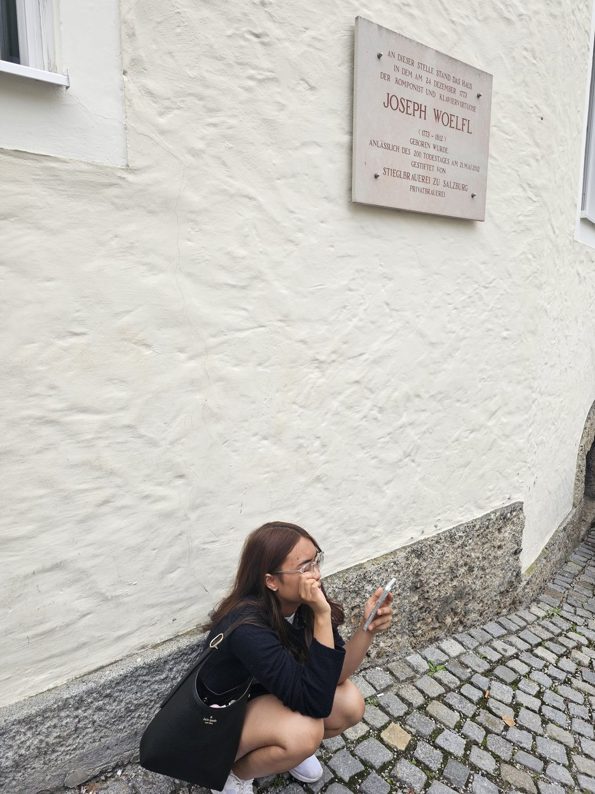
Dan alasan kenapa seluruh kota terlihat dari satu tempat
Dari atas, semuanya masuk akal. Hohensalzburg berdiri di puncak tebing tepat di atas kota lama, dan dari temboknya seluruh Salzburg terbentang: atap-atap tembaga hijau, kubah katedral, menara-menara gereja, sungai yang membelah, dan barisan pegunungan Alpen menutup cakrawala di kejauhan.
Benteng ini mulai dibangun tahun 1077 dan terus ditambah selama berabad-abad oleh uskup-uskup agung yang berkuasa di sini. Hasilnya: salah satu benteng abad pertengahan terbesar di Eropa Tengah yang masih utuh — dan alasan utamanya sederhana. Berdiri di tembok ini, terlihat jelas kenapa tidak ada yang pernah merasa perlu menyerangnya.
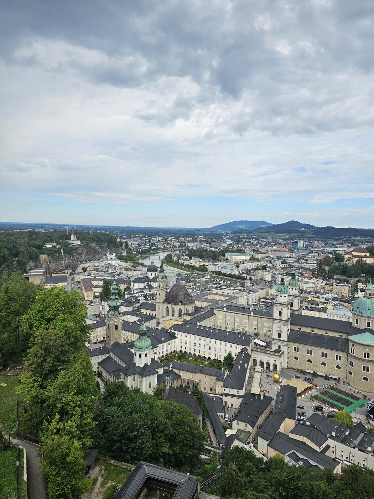
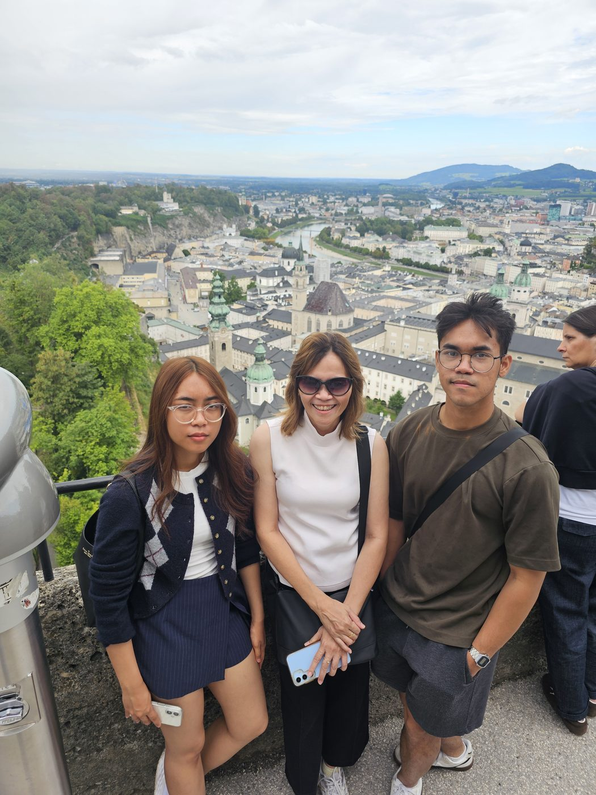
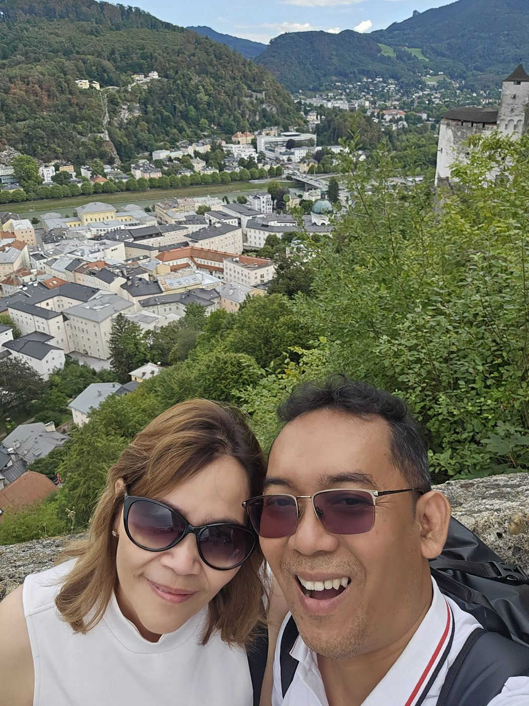
Tembok setebal ini dibangun untuk menahan meriam, bukan untuk jadi pagar foto. Tapi fungsinya sekarang memang begitu.
Mesin yang di Eropa selalu ada, dan selalu bikin berhenti
Di salah satu sudut ada mesin berbadan baja: pencetak medali suvenir. Masukkan €2 — atau dua keping €1 — pilih gambarnya, lalu putar tuasnya sendiri dengan tangan. Mesinnya menekan lempeng logam kosong jadi keping bergambar benteng.
Tidak ada yang istimewa dari benda itu sebagai suvenir. Yang menyenangkan adalah memutarnya — bagian mekanis yang jelas terasa di tangan, di tengah hari yang isinya layar dan kode QR.
Dan catatan kecil yang menjelaskan seluruh sejarahnya
Di dalam salah satu bastion, sebuah meriam besi besar masih terpasang di dudukannya, moncongnya keluar lewat celah tembak yang menghadap lembah. Besinya dingin, permukaannya kasar, dan ukurannya jauh lebih besar dari yang terbayang dari foto.
Tapi inilah bagian yang paling menarik dari benteng ini: sepanjang sejarahnya yang hampir seribu tahun, Hohensalzburg tidak pernah direbut musuh. Meriam-meriam ini menghadap ke lembah selama berabad-abad, dan sebagian besar tidak pernah benar-benar dipakai untuk bertahan. Justru karena terlihat mustahil diserang, tidak ada yang mencoba.
Itu juga yang menjelaskan kenapa bangunannya masih selengkap ini. Benteng yang tidak pernah jatuh adalah benteng yang tidak pernah dihancurkan.
Kiri: maket seluruh kompleks di museumnya — dari sini baru terasa berapa banyak bangunan yang ditumpuk di atas satu bukit. Kanan: jendela kayu tua, dan lembah di luarnya.
Dan inilah yang dibeli dengan selisih €3,70 itu
Ingat papan tiket di bawah tadi — beda Basic dan All-Inclusive cuma €3,70, dan yang mahal dapat tambahan Fürstenzimmer, kamar-kamar pangeran. Kami ambil yang itu. Dan ternyata, justru bagian inilah yang paling layak dilihat di seluruh benteng.
Ruangan-ruangan ini dibangun sekitar tahun 1500, pada masa uskup-agung Leonhard von Keutschach, dan sejak itu nyaris tidak berubah.
Yang pertama membuat berhenti adalah langit-langitnya: papan kayu berpetak biru gelap, ditaburi ratusan kancing emas yang disusun seperti bintang, dengan lambang-lambang berlapis emas di antaranya. Ruangannya sendiri ditopang pilar-pilar marmer berpuntir seperti tali yang dipilin — dipahat dari batu, tapi bentuknya seolah lentur.
Pilarnya dipahat dari satu blok batu. Bagian yang paling sulit dipercaya adalah bahwa bentuk terpilin itu memang dipahat, bukan dicetak.
Di antara ruangan ada pintu kayu berukir berlapis emas — bingkainya berbentuk lengkung gotik bertumpuk, dengan lambang kecil di puncaknya. Dan lambang itu, kalau diperhatikan, muncul terus di seluruh benteng: gambar sebuah lobak. Itu lambang pribadi Keutschach, dan dia memasangnya di mana-mana di bangunan yang dia dirikan — di langit-langit, di pintu, di dinding, puluhan kali. Uskup-agung yang menandai seluruh bentengnya dengan sayuran.
Lengkungan bertumpuk berlapis emas, dan lambang lobak di puncaknya — sekali tahu bentuknya, lambang itu kelihatan di mana-mana.
Tapi benda paling luar biasa di ruangan ini bukan langit-langit atau pintunya. Di sudut berdiri sebuah tungku pemanas keramik setinggi dua orang, dilapisi ubin berglasir hijau, kuning, dan biru, disusun jadi menara bertingkat penuh pahatan sosok manusia, hewan, dan dedaunan — dengan empat singa batu menopangnya di bawah.
Dibuat tahun 1501. Fungsinya cuma satu: menghangatkan ruangan. Ini pemanas ruangan berumur lima ratus tahun lebih, dan bentuknya lebih rumit daripada altar gereja mana pun yang kami lihat sepanjang perjalanan ini.
Baju besi, dan ukuran orang yang memakainya
Bagian museum benteng isinya persis yang diharapkan dari benteng: baju zirah lengkap berdiri di lemari kaca, sebagian polos berkilau, satu di antaranya berhias ukiran emas dari kepala sampai kaki — jelas bukan untuk berperang, tapi untuk dilihat.
Yang selalu mengejutkan kalau berdiri di depannya: ukurannya kecil. Zirah-zirah ini dibuat untuk orang yang tingginya jauh di bawah rata-rata orang sekarang. Sejarah terasa jauh lebih dekat waktu kamu sadar bahwa kamu tidak akan muat memakai bajunya.
Langit-langit yang harus dilihat dua kali
Di salah satu halaman dalam ada sebuah gereja kecil. Dari luar biasa saja; begitu masuk, langit-langitnya yang bicara: kubah jaring gotik — rusuk-rusuk batu tipis yang saling menyilang dan bertemu membentuk pola bintang dan bunga di seluruh atap, dikerjakan di batu, bukan digambar.
Altarnya sendiri sudah barok, ditambahkan berabad-abad kemudian, jadi ruangannya berisi dua zaman sekaligus: rangka gotik di atas, hiasan barok di bawah. Di dindingnya ada relief batu besar berisi sosok-sosok berpahat, dan bangkunya kayu tua yang mengilap karena dipakai.
Dan satu struk yang menutup rangkaian harga hari ini
Jam dua siang, makan siang di restoran panorama di dalam kompleks benteng. Terasnya menghadap lembah, dan yang di piring masakan Austria: Schweinebraten — daging babi panggang dengan kuah cokelat, Semmelknödel (bola roti kukus), dan Sauerkraut; ditambah spaghetti bolognese untuk yang tidak mau berat-berat, dan segelas Zitronen Radler — bir campur limun, minuman siang khas Austria.
Kanan: strukmya, jam 14.14. Perhatikan barisnya — dua kelompok pajak lagi, dan satu baris peringatan di bawah.
Struknya rinci: Schweinebraten €22,10, Spaghetti Bolognese €17,60, Zitronen Radler 0,5 l €6,90. Total €46,60.
Dan pola pajak yang sama muncul lagi, kali ini terpisah rapi di kaki struk: makanan kena PPN 10 persen (€39,70 bruto), minuman kena 20 persen (€6,90 bruto). Ini ketiga kalinya hari-hari terakhir kami melihat pembagian itu — di kios kebab Hallstatt, di McDonald's Salzburg, dan sekarang di restoran benteng.
Satu baris lagi di struk yang layak diperhatikan, dicetak besar dalam dua bahasa: "TIP not included / Mancia non inclusa." Di Austria tip memang tidak otomatis masuk tagihan. Kebiasaan umumnya membulatkan ke atas atau menambah sekitar lima sampai sepuluh persen, diberikan langsung ke pelayannya saat membayar — bukan ditinggal di meja.
Petersfriedhof, di kaki tebing
Turun dari benteng, beberapa menit jalan kaki, dan masuk ke tempat yang sama sekali berbeda suasananya: pemakaman Biara St. Peter. Terjepit antara gereja berkubah bawang hijau dan dinding tebing Mönchsberg yang menjulang tegak lurus di belakangnya.
Yang pertama terasa: ini bukan tempat yang menyedihkan. Setiap petak makam ditanami bunga — merah, merah muda, ungu, putih — dirawat rapi seperti kebun kecil, dengan salib besi tempa berukir dan berlapis emas berdiri di atasnya. Salib-salib itu sendiri karya tukang besi, masing-masing berbeda.
Bunganya diganti sesuai musim. Ini pemakaman yang dirawat seperti kebun, bukan seperti gudang.
Tempat ini dipakai untuk memakamkan orang sudah lebih dari seribu tahun — sejak biara di sebelahnya berdiri pada abad-abad awal Kristen di kawasan ini. Dan di dinding tebing di atasnya ada katakombe: ruang-ruang yang dipahat langsung ke dalam batu, dengan jendela-jendela kecil yang terlihat jelas dari bawah, jauh lebih tua dari gereja di bawahnya.
Kubah bawang hijau itu gereja biaranya. Tembaga yang menghijau karena umur, bukan karena dicat.
Satu nisan yang bikin berhenti lama
Di deretan makam berlengkung di sisi pemakaman — ruang-ruang berpagar besi dengan lukisan besar di dalamnya — ada satu nisan batu bertulisan Latin yang layak dibaca pelan-pelan:
Di sini berbaring SANTINUS SOLARIUS, berasal dari Como, arsitek termasyhur Basilika Keuskupan Agung … wafat tahun MDCXLVI.
MDCXLVI adalah 1646. Dan "Basilika Keuskupan Agung" itu Katedral Salzburg — bangunan besar berkubah yang kami lewati beberapa jam sebelumnya di Domplatz. Orang yang merancangnya datang dari Como di Italia utara, mengerjakan katedral itu, lalu dimakamkan beberapa ratus meter dari bangunan yang dia buat.
Dan pemakaman ini masih dipakai sampai sekarang. Di nisan yang sama menempel lempeng-lempeng baru: seorang uskup pembantu yang wafat 31 Desember 2024, seorang kanon yang wafat 22 Juli 2025. Foto-foto kecil disandarkan di batunya, lilin masih ada, bunga masih segar.
Jadi di satu petak yang sama ada orang yang mati tahun 1646 dan orang yang mati tahun lalu. Bukan museum — tempat ini masih bekerja.
Roti yang masih dibuat dengan tenaga air
Keluar dari pemakaman lewat gang sempit di belakang biara, dan terdengar suara air. Di antara dua dinding rumah, di dalam parit batu berpagar besi, berputar sebuah kincir air kayu besar — pelan, berat, terus-menerus, dialiri kanal air tua yang mengalir menembus kota lama.
Kincir itu menggerakkan penggilingan sebuah toko roti biara yang sudah berdiri berabad-abad dan sampai sekarang masih membuat roti di situ. Di sebelahnya orang duduk di bangku kayu, antre membeli.
Kiri: kincirnya masih bekerja, bukan pajangan. Kanan: patung santo di relung dinding, dan orang antre roti di bawahnya.
Pelajaran pagi tadi terulang dalam bentuk lain
Di alun-alun ada deretan lapak kayu beratap kanvas krem: Brezen manis dan asin, Schaumrollen, Zimtrollen, Apfelstrudel, kacang panggang, dan bir. Papan hitam tulisan kapur, keranjang pretzel bertumpuk, semuanya sangat Austria.
Dan di antara papan-papan itu, satu kertas kecil: CASH ONLY.
Pagi tadi kasir mandiri Billa bertuliskan nur Kartenzahlung — hanya kartu. Siang ini lapak di alun-alun cuma menerima tunai. Dalam satu hari, dua-duanya. Itu alasan kenapa tips soal bawa kartu dan tunai bukan basa-basi.
Patung terakhir hari itu, dan yang paling lama diam di kepala
Di dinding batu sebuah gedung besar, berdiri patung perunggu berwarna hijau pucat. Bentuknya jubah berkerudung yang berdiri tegak — lipatan kainnya jatuh sempurna, kerudungnya menggantung penuh. Tapi di dalamnya tidak ada siapa-siapa. Kosong. Rongga gelap tempat wajah seharusnya berada.
Lempeng kuningan kecil di alasnya menjelaskan. Judulnya "Die Pietà / Cloak of Conscience" — Jubah Nurani — karya pematung Anna Chromy, dipasang di Salzburg tahun 1999. Terinspirasi dari Don Giovanni-nya Mozart dan Jedermann-nya Hofmannsthal, dua karya yang keduanya berhubungan erat dengan kota ini.
Dan kalimat intinya, dipahat di kuningan itu:
Berdiri di depannya setelah seharian melihat benteng yang tidak pernah jatuh, kamar berlangit-langit emas, nisan arsitek dari tahun 1646, dan plakat komposer yang hampir dilupakan — kalimat itu terasa seperti ringkasan yang tidak diminta untuk seluruh hari.
Dan kalimat Latin yang dipahat di bola dunianya
Kembali ke Domplatz, kali ini memperhatikan yang berdiri di tengahnya: tugu tinggi dengan patung Perawan Maria di puncaknya, berjubah panjang, berdiri di atas bola dunia yang dikelilingi sosok-sosok berpahat — malaikat di satu sisi, sosok bertanduk yang terinjak di sisi lain.
Di badan bola itu, dipahat dan disepuh emas, ada kalimat Latin yang masih terbaca jelas:
Artinya kira-kira: dalam pengandungan yang tak bernoda engkau tetap suci, dan bagi kami engkau melahirkan Kristus. Tugunya sendiri dari abad ke-18.
Dan ada satu hal yang layak dicoba di sini: berdiri di titik yang tepat di alun-alun, dan dua patung malaikat di fasad katedral di belakangnya akan tampak persis sedang memegangkan mahkota di atas kepala Maria. Trik optik yang sengaja dirancang — dua benda yang jaraknya puluhan meter, dibuat sejajar untuk satu sudut pandang saja.
Kanan: papan kecil di gerbang bertuliskan Universität Salzburg — Wallistrakt. Universitasnya tidak punya kampus terpisah; ruang kuliahnya menempati gedung-gedung tua di dalam kota lama.
Satu relief batu yang menyambungkan seluruh hari ini
Di gang di belakang Franziskanerkirche — gereja batu berportal gotik runcing yang namanya terpahat di dinding — ada relief batu di atas sebuah pintu berbingkai kayu. Isinya sosok rohaniwan berlutut sambil berdoa, dengan pemandangan kota dan bukit terpahat di kedua sisinya, dan dua lambang keluarga dipegang malaikat kecil di bawahnya.
Namanya terpahat di tengah, huruf kapital Latin: WOLFGANGVS THEODORICVS RAITTENNAVIVS ARCHIEPISCOPVS.
Itu Wolf Dietrich von Raitenau, uskup-agung sekaligus penguasa Salzburg dari 1587 sampai 1612. Dan begitu namanya terbaca, seluruh hari ini tiba-tiba tersambung jadi satu:
Jadi tanpa direncanakan, seharian ini kami berjalan di antara tiga bangunan yang semuanya berhubungan dengan satu orang: taman yang dia bangun untuk kekasihnya, katedral yang dia mulai tapi tidak sempat dia lihat selesai, dan benteng tempat dia mati sebagai tahanan.
Dan reliefnya sendiri? Tidak ada papan penjelas, tidak ada penunjuk arah. Cuma batu di atas pintu, di gang yang orang lewati sambil mencari tempat makan.
Kanan: reliefnya. Nama itu terpahat di bawah sosok yang berlutut, di antara dua lambang keluarga yang dipegang malaikat kecil.
Halaman tembus di sebelahnya: fresko besar di dinding, menara jam di atas, dan sepeda-sepeda warga diparkir seperti biasa.
Yang dijual bukan buket turis
Beberapa langkah lagi, dan jalan membuka ke pasar terbuka di alun-alun sebelah universitas. Ini bukan lapak suvenir — ini pasar yang dipakai warga: artichoke masih bertangkai panjang, cabai merah dalam pot, bunga matahari seikat besar, lavender kering diikat rapi, karangan bunga kering, dan krisan musim gugur dalam ember biru.
Papan harganya ditulis kapur di papan hitam kecil, terpasang miring di antara bunga: €3, €10, €2. Di seberangnya ada toko buku, dan orang-orang lewat membawa tas belanja, bukan kamera.
Artichoke dan cabai dijual di lapak yang sama dengan lavender kering. Ini pasar sungguhan, bukan pajangan.
Kenapa jam makan di Austria perlu diperhatikan
Di sebuah gang berdiri pintu masuk Café Mozart — huruf emas timbul di dinding batu, dikelilingi bunga merah. Di sebelahnya papan merah berisi keterangan jam buka dapurnya, dan di situ ada satu kata yang layak dihafal siapa pun yang jalan-jalan di Austria: durchgehend.
Täglich durchgehend warme Küche von 11:00 – 20:30 Uhr — dapur panas terus-menerus dari jam 11 pagi sampai setengah sembilan malam. Kenapa itu perlu diiklankan? Karena banyak restoran di Austria menutup dapurnya di sore hari, biasanya sekitar jam dua sampai setengah enam. Datang jam empat sore, dan yang tersedia cuma kopi dan kue.
Jadi kalau jam makanmu berantakan karena keliling seharian, cari papan bertuliskan durchgehend warme Küche. Itu tanda dapurnya tidak tutup.
Jalan tersempit yang paling ramai, dan papan besi yang jadi aturan
Perhentian terakhir sore itu jalan paling terkenal di Salzburg: Getreidegasse. Sempit, tinggi, berlantai batu, dan padat orang dari ujung ke ujung. Tapi yang membuatnya khas bukan tokonya — melainkan yang menggantung di atas kepala.
Di sepanjang jalan itu, setiap toko punya papan nama dari besi tempa yang menjorok keluar dari dinding: berukir, bersepuh emas, berbentuk lambang atau gambar. Dulu ini bukan gaya-gayaan — kebanyakan orang belum bisa membaca, jadi toko memasang gambar: kunci untuk tukang kunci, roti untuk tukang roti, bintang untuk rumah bir bernama Bintang.
Dan sekarang aturannya dipertahankan. Merek internasional yang buka di jalan ini tidak boleh memasang papan biasa — mereka harus ikut bikin papan besi tempa dengan gaya yang sama. Jadi di antara papan tukang emas berumur ratusan tahun, ada papan besi berukir bertuliskan nama-nama merek pakaian modern, dibuat dengan cara yang sama.
Kanan: satu papan bertuliskan seit 1855 — sejak 1855. Di jalan ini angka seperti itu bukan pajangan.
Dua hal yang menempel di gedung yang sama
Di antara gedung-gedung tua ada lorong tembus yang dipakai sebagai deretan toko: pintunya lengkung batu, dan di atasnya huruf timbul schmuck-passage — lorong perhiasan. Di dalamnya etalase kaca berjajar di kedua sisi, terang oleh lampu kuning. Dan di dinding luar pintunya, dua papan kecil: Caritas Salzburg di lantai satu, Salzburg Easter Festival di lantai dua. Toko perhiasan, lembaga amal, dan kantor festival musik — satu gedung, tiga dunia.
Kanan: relung salib di dinding gedung biasa, dengan geranium dan lilin nazar. Seperti ceruk santa kemarin — masih diurus, bukan pajangan.
Maket yang memang dibuat untuk diraba
Di sebuah alun-alun berdiri meja perunggu setinggi pinggang: maket seluruh kota lama Salzburg. Sungai Salzach membelah di tengah, setiap blok rumah terpahat, benteng berdiri di bukitnya, jembatan-jembatannya menyeberang — semuanya dalam logam yang sudah menghijau di bagian yang jarang disentuh.
Yang membuatnya lebih dari sekadar hiasan: di tepinya ada lempeng-lempeng berhuruf Braille. Maket ini dibuat supaya orang yang tidak bisa melihat tetap bisa mengenali bentuk kotanya — dengan meraba. Itu juga yang menjelaskan kenapa permukaan gedung-gedungnya mengilap: bagian yang paling sering disentuh tangan.
Berdiri di sebelahnya, kami baru sadar sedang meraba tempat-tempat yang seharian ini didatangi: benteng di atas, katedral di tengah, sungai di sebelahnya, dan taman Mirabell di seberang.
Kiri: perhatikan bagian yang mengilap — itu yang paling sering diraba. Kanan: bendera Austria dan Uni Eropa di fasad hotel, menara balai kota di ujung jalan.
Kesenian yang hampir habis, masih dikerjakan di trotoar
Di trotoar dekat katedral duduk seorang laki-laki berkacamata dengan papan lipat berisi puluhan siluet hitam. Di tengah kerumunan, dia memegang selembar kertas hitam dan sepasang gunting — lalu memotong.
Tanpa menggambar dulu. Tidak ada pensil, tidak ada garis bantu. Dia melihat wajah orangnya, lalu langsung menggunting profilnya dari kertas. Papan keterangannya menjelaskan siapa dia: Vlado Barisic, seniman asal Kroasia, yang pernah bekerja di München dan Amsterdam, di musim panas di Poreč tepi Adriatik, dan sudah lebih dari dua puluh tahun mangkal di Salzburg.
Tarifnya, ditulis besar di kertas oranye: €5 per orang. Dan di sebelahnya ditulis tangan: dua menit.
Kesenian ini namanya Scherenschnitt, dan dulu — sebelum ada fotografi — inilah cara orang biasa punya potret dirinya. Di papan contohnya ada siluet berlabel Johann Strauss.
Kanan: papan keterangannya, lengkap dengan guntingan koran dan harga. Satu siluet di kiri bawah berlabel Johann Strauss.
Dan satu papan di pintu supermarket yang menjelaskan semuanya
Ada satu hal yang terasa sepanjang hari ini, dan baru benar-benar terjelaskan menjelang malam: anjing di mana-mana. Di Getreidegasse yang padat, orang berjalan santai membawa anjingnya di antara kerumunan. Di teras kafe, anjing tidur di bawah meja. Di bus, di alun-alun, di gang sempit — dan tidak ada satu pun yang menggonggong, menarik-narik tali, atau membuat orang menyingkir.
Lalu sore harinya, waktu mampir lagi ke supermarket dekat penginapan, jawabannya terpasang di dinding pintu masuk: sebuah papan kecil bergambar anjing duduk, dengan huruf P besar berlatar biru — lambang parkir. Tulisannya: HUNDE-PARKPLATZ.
Tempat parkir anjing. Lengkap dengan kaitan di dinding untuk menambatkan talinya.
Dan di bawahnya, seekor anjing gembala Jerman sedang berbaring tenang di lantai keramik, tali terkait rapi, menunggu tuannya belanja. Tidak gelisah, tidak menyalak, tidak mencoba lepas. Cuma menunggu — persis seperti mobil yang diparkir.
Dua hal yang membuat ini bisa terjadi, dan dua-duanya saling mengunci. Pertama, anjingnya terlatih — bukan sekadar jinak, tapi memang dibiasakan sejak kecil untuk tenang di keramaian dan menunggu tanpa ditemani. Kedua, tempatnya menyediakan. Supermarket tidak boleh dimasuki anjing karena urusan kebersihan pangan, tapi daripada membiarkan orang bingung, mereka memasang kaitan dan papan.
Buat kami yang datang dari tempat di mana anjing jarang dibawa ke ruang publik, pemandangan itu terasa asing sekaligus masuk akal. Anjing di sini bukan tamu yang ditoleransi — dia punya tempat parkir sendiri.
Papan halte yang menunjukkan segalanya
Menjelang sore, kembali ke halte Rathaus — persis di depan balai kota. Papan haltenya digital: kolom Linie, kolom Ziel (tujuan), kolom Abfahrt (keberangkatan, dalam menit). Lambang huruf H kuning besar di atasnya — Haltestelle, halte.
Yang berguna dari papan seperti ini: angka menitnya bukan jadwal, tapi hitungan mundur sungguhan. Dan di paling bawah, satu baris berjalan mengumumkan gangguan lalu lintas — di kota yang seluruh transportasinya berjalan sesuai waktu, informasi itu memang yang paling penting.
Kanan: bus 6 jurusan Parsch. Dan di kejauhan, spanduk kuning yang sama seperti pagi tadi — weniger stau, mehr stadt.
Rencana yang gagal kemarin, terbayar malam ini
Kemarin malam rencananya makan di restoran Cina, tapi tempatnya penuh diborong rombongan dan berakhir di McDonald's. Malam ini rencana itu ditagih kembali — dan yang didapat malah lebih tepat sasaran: Phở Hà Nội, rumah makan Vietnam, huruf oranye menyala di dinding kelabu waktu langit mulai gelap.
Di dalamnya rapi dan terang, dan yang keluar dari dapur akhirnya nasi, kuah, dan mi:
Dan struknya menutup satu pola yang sudah muncul berulang sepanjang perjalanan ini. Di kakinya, lagi-lagi, dua baris pajak: 10 persen untuk makanan, 20 persen untuk minuman. Ini keempat kalinya pembagian yang sama kami lihat dalam tiga hari — di kios kebab Hallstatt, di McDonald's, di restoran benteng, dan sekarang di rumah makan Vietnam. Sistem pajak yang sama, dijalankan sama persis oleh warung pinggir jalan dan restoran di dalam benteng.
Sebelas jam, dan hampir semuanya jalan kaki
Hari kesembilan selesai. Dimulai jam 08.48 di kasir supermarket dengan sarapan berempat seharga €11,27, ditutup jam 19.52 di meja rumah makan Vietnam. Di antaranya: dapur bersama, bus listrik yang gratis, taman barok, teater dari pagar tanaman, kebun kurcaci, benteng yang tidak pernah jatuh, kamar berlangit-langit emas, pemakaman berumur seribu tahun, dan satu relief batu yang ternyata menyambungkan tiga tempat itu jadi satu cerita.
Mobilnya tidak dinyalakan sekali pun.